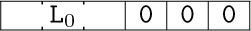
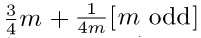
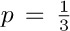
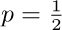
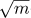
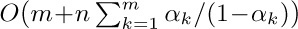
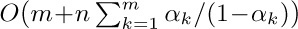

I think that I shall never see
A poem lovely as a tree.
— JOYCE KILMER (1913)
Yea, from the table of my memory
I’ll wipe away all trivial fond records.
— HAMLET (Act I, Scene 5, Line 98)
COMPUTER PROGRAMS usually operate on tables of information. In most cases these tables are not simply amorphous masses of numerical values; they involve important structural relationships between the data elements.
In its simplest form, a table might be a linear list of elements, when its relevant structural properties might include the answers to such questions as: Which element is first in the list? Which is last? Which elements precede and follow a given one? How many elements are in the list? A lot can be said about structure even in this apparently simple case (see Section 2.2).
In more complicated situations, the table might be a two-dimensional array (a matrix or grid, having both a row and a column structure), or it might be an n-dimensional array for higher values of n; it might be a tree structure, representing hierarchical or branching relationships; or it might be a complex multilinked structure with a great many interconnections, such as we may find in a human brain.
In order to use a computer properly, we need to understand the structural relationships present within data, as well as the basic techniques for representing and manipulating such structure within a computer.
The present chapter summarizes the most important facts about information structures: the static and dynamic properties of different kinds of structure; means for storage allocation and representation of structured data; and efficient algorithms for creating, altering, accessing, and destroying structural information. In the course of this study, we will also work out several important examples that illustrate the application of such methods to a wide variety of problems. The examples include topological sorting, polynomial arithmetic, discrete system simulation, sparse matrix transformation, algebraic formula manipulation, and applications to the writing of compilers and operating systems. Our concern will be almost entirely with structure as represented inside a computer; the conversion from external to internal representations is the subject of Chapters 9 and 10.
Much of the material we will discuss is often called “List processing,” since a number of programming systems such as LISP have been designed to facilitate working with general kinds of structures called Lists. (When the word “list” is capitalized in this chapter, it is being used in a technical sense to denote a particular type of structure that is highlighted in Section 2.3.5.) Although List processing systems are useful in a large number of situations, they impose constraints on the programmer that are often unnecessary; it is usually better to use the methods of this chapter directly in one’s own programs, tailoring the data format and the processing algorithms to the particular application. Many people unfortunately still feel that List processing techniques are quite complicated (so that it is necessary to use someone else’s carefully written interpretive system or a prefabricated set of subroutines), and that List processing must be done only in a certain fixed way. We will see that there is nothing magic, mysterious, or difficult about the methods for dealing with complex structures; these techniques are an important part of every programmer’s repertoire, and we can use them easily whether we are writing a program in assembly language or in an algebraic language like FORTRAN, C, or Java.
We will illustrate methods of dealing with information structures in terms of the MIX computer. A reader who does not care to look through detailed MIX programs should at least study the ways in which structural information is represented in MIX’s memory.
It is important at this point to define several terms and notations that we will be using frequently from now on. The information in a table consists of a set of nodes (called “records,” “entities,” or “beads” by some authors); we will occasionally say “item” or “element” instead of “node.” Each node consists of one or more consecutive words of the computer memory, divided into named parts called fields. In the simplest case, a node is just one word of memory, and it has just one field comprising that whole word. As a more interesting example, suppose the elements of our table are intended to represent playing cards; we might have two-word nodes broken into five fields, TAG, SUIT, RANK, NEXT, and TITLE:
(This format reflects the contents of two MIX words. Recall that a MIX word consists of five bytes and a sign; see Section 1.3.1. In this example we assume that the signs are + in each word.) The address of a node, also called a link, pointer, or reference to that node, is the memory location of its first word. The address is often taken relative to some base location, but in this chapter for simplicity we will take the address to be an absolute memory location.
The contents of any field within a node may represent numbers, alphabetic characters, links, or anything else the programmer may desire. In connection with the example above, we might wish to represent a pile of cards that might appear in a game of solitaire: TAG = 1 means that the card is face down, TAG = 0 means that it is face up; SUIT = 1, 2, 3, or 4 for clubs, diamonds, hearts, or spades, respectively; RANK = 1, 2, . . ., 13 for ace, deuce, . . ., king; NEXT is a link to the card below this one in the pile; and TITLE is a five-character alphabetic name of this card, for use in printouts. A typical pile might look like this:
The memory locations in the computer representation are shown here as 100, 386, and 242; they could have been any other numbers as far as this example is concerned, since each card links to the one below it. Notice the special link “Λ” in node 100; we use the capital Greek letter Lambda to denote the null link, the link to no node. The null link Λ appears in node 100 since the 10 of clubs is the bottom card of the pile. Within the machine, Λ is represented by some easily recognizable value that cannot be the address of a node. We will generally assume that no node appears in location 0; consequently, Λ will almost always be represented as the link value 0 in MIX programs.
The introduction of links to other elements of data is an extremely important idea in computer programming; links are the key to the representation of complex structures. When displaying computer representations of nodes it is usually convenient to represent links by arrows, so that example (2) would appear thus:
The actual locations 242, 386, and 100 (which are irrelevant anyway) no longer appear in representation (3). Electrical circuit notation for a “grounded” wire is used to indicate a null link, shown here at the right of the diagram. Notice also that (3) indicates the top card by an arrow from “TOP”; here TOP is a link variable, often called a pointer variable, namely a variable whose value is a link. All references to nodes in a program are made directly through link variables (or link constants), or indirectly through link fields in other nodes.
Now we come to the most important part of the notation, the means of referring to fields within nodes. This is done simply by giving the name of the field followed by a link to the desired node in parentheses; for example, in (2) and (3) with the fields of (1) we have
The reader should study these examples carefully, since such field notations will be used in many algorithms of this chapter and the following chapters. To make the ideas clearer, we will now state a simple algorithm for placing a new card face up on top of the pile, assuming that NEWCARD is a link variable whose value is a link to the new card:
A1. Set NEXT(NEWCARD) ← TOP. (This puts the appropriate link into the new card node.)
A2. Set TOP ← NEWCARD. (This keeps TOP pointing to the top of the pile.)
A3. Set TAG(TOP) ← 0. (This marks the card as “face up.”) 
Another example is the following algorithm, which counts the number of cards currently in the pile:
B1. Set N ← 0, X ← TOP. (Here N is an integer variable, X is a link variable.)
B2. If X = Λ, stop; N is the number of cards in the pile.
B3. Set N ← N + 1, X ← NEXT(X), and go back to step B2.
Notice that we are using symbolic names for two quite different things in these algorithms: as names of variables (TOP, NEWCARD, N, X) and as names of fields (TAG, NEXT). These two usages must not be confused. If F is a field name and L ≠ Λ is a link, then F(L) is a variable; but F itself is not a variable — it does not possess a value unless it is qualified by a nonnull link.
Two further notations are used, to convert between addresses and the values stored there, when we are discussing low-level machine details:
a) CONTENTS always denotes a full-word field of a one-word node. Thus CONTENTS(1000) denotes the value stored in memory location 1000; it is a variable having this value. If V is a link variable, CONTENTS(V) denotes the value pointed to by V (not the value V itself).
b) If V is the name of some value held in a memory cell, LOC(V) denotes the address of that cell. Consequently, if V is a variable whose value is stored in a full word of memory, we have CONTENTS(LOC(V)) = V.
It is easy to transform this notation into MIXAL assembly language code, although MIXAL’s notation is somewhat backwards. The values of link variables are put into index registers, and the partial-field capability of MIX is used to refer to the desired field. For example, Algorithm A above could be written thus:
The ease and efficiency with which these operations can be carried out in a computer is the primary reason for the importance of the “linked memory” concept.
Sometimes we have a single variable that denotes a whole node; its value is a sequence of fields instead of just one field. Thus we might write
where NODE is a field specification just like CONTENTS, except that it refers to an entire node, and where CARD is a variable that assumes structured values like those in (1). If there are c words in a node, the notation (6) is an abbreviation for the c low-level assignments
There is an important distinction between assembly language and the notation used in algorithms. Since assembly language is close to the machine’s internal language, the symbols used in MIXAL programs stand for addresses instead of values. Thus in the left-hand columns of (5), the symbol TOP actually denotes the address where the pointer to the top card appears in memory; but in (6) and (7) and in the remarks at the right of (5), it denotes the value of TOP, namely the address of the top card node. This difference between assembly language and higher-level language is a frequent source of confusion for beginning programmers, so the reader is urged to work exercise 7. The other exercises also provide useful drills on the notational conventions introduced in this section.
Exercises
1. [04] In the situation depicted in (3), what is the value of (a) SUIT(NEXT(TOP)); (b) NEXT(NEXT(NEXT(TOP))) ?
2. [10] The text points out that in many cases CONTENTS(LOC(V)) = V. Under what conditions do we have LOC(CONTENTS(V)) = V?
3. [11] Give an algorithm that essentially undoes the effect of Algorithm A: It removes the top card of the pile (if the pile is not empty) and sets NEWCARD to the address of this card.
4. [18] Give an algorithm analogous to Algorithm A, except that it puts the new card face down at the bottom of the pile. (The pile may be empty.)
 5. [21] Give an algorithm that essentially undoes the effect of exercise 4: Assuming that the pile is not empty and that its bottom card is face down, your algorithm should remove the bottom card and make
5. [21] Give an algorithm that essentially undoes the effect of exercise 4: Assuming that the pile is not empty and that its bottom card is face down, your algorithm should remove the bottom card and make NEWCARD link to it. (This algorithm is sometimes called “cheating” in solitaire games.)
6. [06] In the playing card example, suppose that CARD is the name of a variable whose value is an entire node as in (6). The operation CARD ← NODE(TOP) sets the fields of CARD respectively equal to those of the top of the pile. After this operation, which of the following notations stands for the suit of the top card? (a) SUIT(CARD); (b) SUIT(LOC(CARD)); (c) SUIT(CONTENTS(CARD)); (d) SUIT(TOP) ?
 7. [04] In the text’s example
7. [04] In the text’s example MIX program, (5), the link variable TOP is stored in the MIX computer word whose assembly language name is TOP. Given the field structure (1), which of the following sequences of code brings the quantity NEXT(TOP) into register A? Explain why the other sequence is incorrect.
a) LDA TOP(NEXT)
b) LD1 TOP
LDA 0,1(NEXT)
 8. [18] Write a
8. [18] Write a MIX program corresponding to steps B1–B3.
9. [23] Write a MIX program that prints out the alphabetic names of the current contents of the card pile, starting at the top card, with one card per line, and with parentheses around cards that are face down.
DATA USUALLY has much more structural information than we actually want to represent directly in a computer. For example, each “playing card” node in the preceding section had a NEXT field to specify what card was beneath it in the pile, but we provided no direct way to find what card, if any, was above a given card, or to find what pile a given card was in. And of course we totally suppressed most of the characteristic features of real playing cards: the details of the design on the back, the relation to other objects in the room where the game was being played, the individual molecules within the cards, etc. It is conceivable that such structural information would be relevant in certain computer applications, but obviously we never want to store all of the structure that is present in every situation. Indeed, for most card-playing situations we would not need all of the facts retained in the earlier example; the TAG field, which tells whether a card is face up or face down, will often be unnecessary.
We must decide in each case how much structure to represent in our tables, and how accessible to make each piece of information. To make such decisions, we need to know what operations are to be performed on the data. For each problem considered in this chapter, therefore, we consider not only the data structure but also the class of operations to be done on the data; the design of computer representations depends on the desired function of the data as well as on its intrinsic properties. Indeed, an emphasis on function as well as form is basic to design problems in general.
In order to illustrate this point further, let’s consider a related aspect of computer hardware design. A computer memory is often classified as a “random access memory,” like MIX’s main memory; or as a “read-only memory,” which is supposed to contain essentially constant information; or a “secondary bulk memory,” like MIX’s disk units, which cannot be accessed at high speed although large quantities of information can be stored; or an “associative memory,” more properly called a “content-addressed memory,” for which information is addressed by its value rather than by its location; and so on. The intended function of each kind of memory is so important that it enters into the name of the particular memory type; all of these devices are “memory” units, but the purposes to which they are put profoundly influence their design and their cost.
A linear list is a sequence of n ≥ 0 nodes X[1], X[2], . . ., X[n] whose essential structural properties involve only the relative positions between items as they appear in a line. The only things we care about in such structures are the facts that, if n > 0, X[1] is the first node and X[n] is the last; and if 1 < k < n, the kth node X[k] is preceded by X[k − 1] and followed by X[k + 1].
The operations we might want to perform on linear lists include, for example, the following.
i) Gain access to the kth node of the list to examine and/or to change the contents of its fields.
ii) Insert a new node just before or after the kth node.
iii) Delete the kth node.
iv) Combine two or more linear lists into a single list.
v) Split a linear list into two or more lists.
vi) Make a copy of a linear list.
vii) Determine the number of nodes in a list.
viii) Sort the nodes of the list into ascending order based on certain fields of the nodes.
ix) Search the list for the occurrence of a node with a particular value in some field.
In operations (i), (ii), and (iii) the special cases k = 1 and k = n are of principal importance, since the first and last items of a linear list may be easier to get at than a general element is. We will not discuss operations (viii) and (ix) in this chapter, since those topics are the subjects of Chapters 5 and 6, respectively.
A computer application rarely calls for all nine of these operations in their full generality, so we find that there are many ways to represent linear lists depending on the class of operations that are to be done most frequently. It is difficult to design a single representation method for linear lists in which all of these operations are efficient; for example, the ability to gain access to the kth node of a long list for random k is comparatively hard to do if at the same time we are inserting and deleting items in the middle of the list. Therefore we distinguish between types of linear lists depending on the principal operations to be performed, just as we have noted that computer memories are distinguished by their intended applications.
Linear lists in which insertions, deletions, and accesses to values occur almost always at the first or the last node are very frequently encountered, and we give them special names:
A stack is a linear list for which all insertions and deletions (and usually all accesses) are made at one end of the list.
A queue is a linear list for which all insertions are made at one end of the list; all deletions (and usually all accesses) are made at the other end.
A deque (“double-ended queue”) is a linear list for which all insertions and deletions (and usually all accesses) are made at the ends of the list.
A deque is therefore more general than a stack or a queue; it has some properties in common with a deck of cards, and it is pronounced the same way. We also distinguish output-restricted or input-restricted deques, in which deletions or insertions, respectively, are allowed to take place at only one end.
In some disciplines the word “queue” has been used in a much broader sense, to describe any kind of list that is subject to insertions and deletions; the special cases identified above are then called various “queuing disciplines.” Only the restricted use of the term “queue” is intended in this book, however, by analogy with orderly queues of people waiting in line for service.
Sometimes it helps to understand the mechanism of a stack in terms of an analogy from the switching of railroad cars, as suggested by E. W. Dijkstra (see Fig. 1). A corresponding picture for deques is shown in Fig. 2.
With a stack we always remove the “youngest” item currently in the list, namely the one that has been inserted more recently than any other. With a queue just the opposite is true: The “oldest” item is always removed; the nodes leave the list in the same order as they entered it.
Many people who have independently realized the importance of stacks and queues have given them other names: Stacks have been called push-down lists, reversion storages, cellars, nesting stores, piles, last-in-first-out (“LIFO”) lists, and even yo-yo lists. Queues are sometimes called circular stores or first-in-first-out (“FIFO”) lists. The terms LIFO and FIFO have been used for many years by accountants, as names of methods for pricing inventories. Still another term, “shelf,” has been applied to output-restricted deques, and input-restricted deques have been called “scrolls” or “rolls.” This multiplicity of names is interesting in itself, since it is evidence for the importance of the concepts. The words stack and queue are gradually becoming standard terminology; of all the other words listed above, only “push-down list” is still reasonably common, particularly in connection with automata theory.
Stacks arise quite frequently in practice. We might, for example, go through a set of data and keep a list of exceptional conditions or things to do later; after we’re done with the original set, we can then do the rest of the processing by coming back to the list, removing entries until it becomes empty. (The “saddle point” problem, exercise 1.3.2–10, is an instance of this situation.) Either a stack or a queue will be suitable for such a list, but a stack is generally more convenient. We all have “stacks” in our minds when we are solving problems: One problem leads to another and this leads to another; we stack up problems and subproblems and remove them as they are solved. Similarly, the process of entering and leaving subroutines during the execution of a computer program has a stack-like behavior. Stacks are particularly useful for the processing of languages with a nested structure, like programming languages, arithmetic expressions, and the literary German “Schachtelsätze.” In general, stacks occur most frequently in connection with explicitly or implicitly recursive algorithms, and we will discuss this connection thoroughly in Chapter 8.
Special terminology is generally used when algorithms refer to these structures: We put an item onto the top of a stack, or take the top item off (see Fig. 3a). The bottom of the stack is the least accessible item, and it will not be removed until all other items have been deleted. (People often say that they push an item down onto a stack, and pop the stack up when the top item is deleted. This terminology comes from an analogy with the stacks of plates often found in cafeterias. The brevity of the words “push” and “pop” has its advantages, but these terms falsely imply a motion of the whole list within computer memory. Nothing is physically pushed down; items are added onto the top, as in haystacks or stacks of boxes.) With queues, we speak of the front and the rear of the queue; things enter at the rear and are removed when they ultimately reach the front position (see Fig. 3b). When referring to deques, we speak of the left and right ends (Fig. 3c). The concepts of top, bottom, front, and rear are sometimes applied todeques that are being used as stacks or queues, with no standard conventions as to whether top, bottom, front, and rear should appear at the left or the right.
Thus we find it easy to use a rich variety of descriptive words from English in our algorithms: “up-down” terminology for stacks, “waiting in line” terminology for queues, and “left-right” terminology for deques.
A little bit of additional notation has proved to be convenient for dealing with stacks and queues: We write
(when A is a stack) to mean that the value x is inserted on top of stack A, or (when A is a queue) to mean that x is inserted at the rear of the queue. Similarly, the notation
is used to mean that the variable x is set equal to the value at the top of stack A or at the front of queue A, and this value is deleted from A. Notation (2) is meaningless when A is empty — that is, when A contains no values.
If A is a nonempty stack, we may write
to denote its top element.
Exercises
1. [06] An input-restricted deque is a linear list in which items may be inserted at one end but removed from either end; clearly an input-restricted deque can operate either as a stack or as a queue, if we consistently remove all items from one of the two ends. Can an output-restricted deque also be operated either as a stack or as a queue?
 2. [15] Imagine four railroad cars positioned on the input side of the track in Fig. 1, numbered 1, 2, 3, and 4, from left to right. Suppose we perform the following sequence of operations (which is compatible with the direction of the arrows in the diagram and does not require cars to “jump over” other cars): (i) move car 1 into the stack; (ii) move car 2 into the stack; (iii) move car 2 into the output; (iv) move car 3 into the stack; (v) move car 4 into the stack; (vi) move car 4 into the output; (vii) move car 3 into the output; (viii) move car 1 into the output.
2. [15] Imagine four railroad cars positioned on the input side of the track in Fig. 1, numbered 1, 2, 3, and 4, from left to right. Suppose we perform the following sequence of operations (which is compatible with the direction of the arrows in the diagram and does not require cars to “jump over” other cars): (i) move car 1 into the stack; (ii) move car 2 into the stack; (iii) move car 2 into the output; (iv) move car 3 into the stack; (v) move car 4 into the stack; (vi) move car 4 into the output; (vii) move car 3 into the output; (viii) move car 1 into the output.
As a result of these operations the original order of the cars, 1234, has been changed into 2431. It is the purpose of this exercise and the following exercises to examine what permutations are obtainable in such a manner from stacks, queues, or deques.
If there are six railroad cars numbered 123456, can they be permuted into the order 325641? Can they be permuted into the order 154623? (In case it is possible, show how to do it.)
3. [25] The operations (i) through (viii) in the previous exercise can be much more concisely described by the code SSXSSXXX, where S stands for “move a car from the input into the stack,” and X stands for “move a car from the stack into the output.” Some sequences of S’s and X’s specify meaningless operations, since there may be no cars available on the specified track; for example, the sequence SXXSSXXS cannot be carried out, since we assume that the stack is initially empty.
Let us call a sequence of S’s and X’s admissible if it contains n S’s and n X’s, and if it specifies no operations that cannot be performed. Formulate a rule by which it is easy to distinguish between admissible and inadmissible sequences; show furthermore that no two different admissible sequences give the same output permutation.
4. [M34] Find a simple formula for an, the number of permutations on n elements that can be obtained with a stack like that in exercise 2.
 5. [M28] Show that it is possible to obtain a permutation p1p2. . . pn from 12 . . . n using a stack if and only if there are no indices i < j < k such that pj < pk < pi.
5. [M28] Show that it is possible to obtain a permutation p1p2. . . pn from 12 . . . n using a stack if and only if there are no indices i < j < k such that pj < pk < pi.
6. [00] Consider the problem of exercise 2, with a queue substituted for a stack. What permutations of 12 . . . n can be obtained with use of a queue?
 7. [25] Consider the problem of exercise 2, with a deque substituted for a stack. (a) Find a permutation of 1234 that can be obtained with an input-restricted deque, but it cannot be obtained with an output-restricted deque. (b) Find a permutation of 1234 that can be obtained with an output-restricted deque but not with an input-restricted deque. [As a consequence of (a) and (b), there is definitely a difference between input-restricted and output-restricted deques.] (c) Find a permutation of 1234 that cannot be obtained with either an input-restricted or an output-restricted deque.
7. [25] Consider the problem of exercise 2, with a deque substituted for a stack. (a) Find a permutation of 1234 that can be obtained with an input-restricted deque, but it cannot be obtained with an output-restricted deque. (b) Find a permutation of 1234 that can be obtained with an output-restricted deque but not with an input-restricted deque. [As a consequence of (a) and (b), there is definitely a difference between input-restricted and output-restricted deques.] (c) Find a permutation of 1234 that cannot be obtained with either an input-restricted or an output-restricted deque.
8. [22] Are there any permutations of 12 . . . n that cannot be obtained with the use of a deque that is neither input-nor output-restricted?
9. [M20] Let bn be the number of permutations on n elements obtainable by the use of an input-restricted deque. (Note that b4 = 22, as shown in exercise 7.) Show that bn is also the number of permutations on n elements with an output-restricted deque.
10. [M25] (See exercise 3.) Let S, Q, and X denote respectively the operations of in-serting an element at the left, inserting an element at the right, and emitting an element from the left, of an output-restricted deque. For example, the sequence QQXSXSXX will transform the input sequence 1234 into 1342. The sequence SXQSXSXX gives the same transformation.
Find a way to define the concept of an admissible sequence of the symbols S, Q, and X, so that the following property holds: Every permutation of n elements that is attainable with an output-restricted deque corresponds to precisely one admissible sequence.
 11. [M40] As a consequence of exercises 9 and 10, the number bn is the number of admissible sequences of length 2n. Find a closed form for the generating function ∑n≥0bnzn.
11. [M40] As a consequence of exercises 9 and 10, the number bn is the number of admissible sequences of length 2n. Find a closed form for the generating function ∑n≥0bnzn.
12. [HM34] Compute the asymptotic values of the quantities an and bn in exercises 4 and 11.
13. [M48] How many permutations of n elements are obtainable with the use of a general deque? [See Rosenstiehl and Tarjan, J. Algorithms 5 (1984), 389–390, for an algorithm that decides in O(n) steps whether or not a given permutation is obtainable.]
 14. [26] Suppose you are allowed to use only stacks as data structures. How can you implement a queue efficiently with two stacks?
14. [26] Suppose you are allowed to use only stacks as data structures. How can you implement a queue efficiently with two stacks?
The simplest and most natural way to keep a linear list inside a computer is to put the list items in consecutive locations, one node after the other. Then we will have
LOC(X[ j + 1]) = LOC(X[ j]) + c,
where c is the number of words per node. (Usually c = 1. When c > 1, it is sometimes more convenient to split a single list into c “parallel” lists, so that the kth word of node X[j] is stored a fixed distance from the location of the first word of X[ j], depending on k. We will continually assume, however, that adjacent groups of c words form a single node.) In general,
where L0 is a constant called the base address, the location of an artificially assumed node X[0].
This technique for representing a linear list is so obvious and well-known that there seems to be no need to dwell on it at any length. But we will be seeing many other “more sophisticated” methods of representation later on in this chapter, and it is a good idea to examine the simple case first to see just how far we can go with it. It is important to understand the limitations as well as the power of the use of sequential allocation.
Sequential allocation is quite convenient for dealing with a stack. We simply have a variable T called the stack pointer. When the stack is empty, we let T = 0. To place a new element Y on top of the stack, we set
And when the stack is not empty, we can set Y equal to the top node and delete that node by reversing the actions of (2):
(Inside a computer it is usually most efficient to maintain the value cT instead of T, because of (1). Such modifications are easily made, so we will continue our discussion as though c = 1.)
The representation of a queue or a more general deque is a little trickier. An obvious solution is to keep two pointers, say F and R (for the front and rear of the queue), with F = R = 0 when the queue is empty. Then inserting an element at the rear of the queue would be
Removing the front node (F points just below the front) would be
But note what can happen: If R always stays ahead of F (so that there is always at least one node in the queue) the table entries used are X[1], X[2], . . ., X[1000], . . ., ad infinitum, and this is terribly wasteful of storage space. The simple method of (4) and (5) should therefore be used only in the situation when F is known to catch up to R quite regularly — for example, if all deletions come in spurts that empty the queue.
To circumvent the problem of the queue overrunning memory, we can set aside M nodes X[1], . . ., X[M] arranged implicitly in a circle with X[1] following X[M]. Then processes (4) and (5) above become
We have, in fact, already seen circular queuing action like this, when we looked at input-output buffering in Section 1.4.4.
Our discussion so far has been very unrealistic, because we have tacitly assumed that nothing could go wrong. When we deleted a node from a stack or queue, we assumed that there was at least one node present. When we inserted a node into a stack or queue, we assumed that there was room for it in memory. But clearly the method of (6) and (7) allows at most M nodes in the entire queue, and methods (2), (3), (4), (5) allow T and R to reach only a certain maximum amount within any given computer program. The following specifications show how the actions should be rewritten for the common case where we do not assume that these restrictions are automatically satisfied:
Here we assume that X[1], . . ., X[M] is the total amount of space allowed for the list; OVERFLOW and UNDERFLOW mean an excess or deficiency of items. The initial setting F = R = 0 for the queue pointers is no longer valid when we use (6a) and (7a), because overflow will not be detected when F = 0; we should start with F = R = 1, say.
The reader is urged to work exercise 1, which discusses a nontrivial aspect of this simple queuing mechanism.
The next question is, “What do we do when UNDERFLOW or OVERFLOW occurs?” In the case of UNDERFLOW, we have tried to remove a nonexistent item; this is usually a meaningful condition — not an error situation — that can be used to govern the flow of a program. For example, we might want to delete items repeatedly until UNDERFLOW occurs. An OVERFLOW situation, however, is usually an error; it means that the table is full already, yet there is still more information waiting to be put in. The usual policy in case of OVERFLOW is to report reluctantly that the program cannot go on because its storage capacity has been exceeded; then the program terminates.
Of course we hate to give up in an OVERFLOW situation when only one list has gotten too large, while other lists of the same program may very well have plenty of room remaining. In the discussion above we were primarily thinking of a program with only one list. However, we frequently encounter programs that involve several stacks, each of which has a dynamically varying size. In such a situation we don’t want to impose a maximum size on each stack, since the size is usually unpredictable; and even if a maximum size has been determined for each stack, we will rarely find all stacks simultaneously filling their maximum capacity.
When there are just two variable-size lists, they can coexist together very nicely if we let the lists grow toward each other:
Here list 1 expands to the right, and list 2 (stored in reverse order) expands to the left. OVERFLOW will not occur unless the total size of both lists exhausts all memory space. The lists may independently expand and contract so that the effective maximum size of each one could be significantly more than half of the available space. This layout of memory space is used very frequently.
We can easily convince ourselves, however, that there is no way to store three or more variable-size sequential lists in memory so that (a) OVERFLOW will occur only when the total size of all lists exceeds the total space, and (b) each list has a fixed location for its “bottom” element. When there are, say, ten or more variable-size lists — and this is not unusual — the storage allocation problem becomes very significant. If we wish to satisfy condition (a), we must give up condition (b); that is, we must allow the “bottom” elements of the lists to change their positions. This means that the location L0 of Eq. (1) is not constant any longer; no reference to the table may be made to an absolute memory address, since all references must be relative to the base address L0. In the case of MIX, the coding to bring the Ith one-word node into register A is changed from
where BASE contains . Such relative addressing evidently takes longer than fixed-base addressing, although it would be only slightly slower if MIX had an “indirect addressing” feature (see exercise 3).
An important special case occurs when each of the variable-size lists is a stack. Then, since only the top element of each stack is relevant at any time, we can proceed almost as efficiently as before. Suppose that we have n stacks; the insertion and deletion algorithms above become the following, if BASE[i] and TOP[i] are link variables for the ith stack, and if each node is one word long:
Here BASE[i + 1] is the base location of the (i + 1)st stack. The condition TOP[i] = BASE[i] means that stack i is empty.
In (9), OVERFLOW is no longer such a crisis as it was before; we can “repack memory,” making room for the table that overflowed by taking some away from tables that aren’t yet filled. Several ways to do the repacking suggest themselves; we will now consider some of them in detail, since they can be quite important when linear lists are allocated sequentially. We will start by giving the simplest of the methods, and will then consider some of the alternatives.
Assume that there are n stacks, and that the values BASE[i] and TOP[i] are to be treated as in (9) and (10). These stacks are all supposed to share a common memory area consisting of all locations L with L0 < L ≤ L∞. (Here L0 and L∞ are constants that specify the total number of words available for use.) We might start out with all stacks empty, and
We also set BASE[n + 1] = L∞ so that (9) will work properly for i = n.
When OVERFLOW occurs with respect to stack i, there are three possibilities:
a) We find the smallest k for which i < k ≤ n and TOP[k] < BASE[k + 1], if any such k exist. Now move things up one notch:
Set CONTENTS(L + 1) ← CONTENTS(L), for TOP[k] ≥ L > BASE[i + 1].
(This must be done for decreasing, not increasing, values of L to avoid losing information. It is possible that TOP[k] = BASE[i + 1], in which case nothing needs to be moved.) Finally we set BASE[ j] ← BASE[ j] + 1 and TOP[ j] ← TOP[ j] + 1, for i < j ≤ k.
b) No k can be found as in (a), but we find the largest k for which 1 ≤ k < i and TOP[k] < BASE[k + 1]. Now move things down one notch:
Set CONTENTS(L − 1) ← CONTENTS(L), for BASE[k + 1] < L < TOP[i].
(This must be done for increasing values of L.) Then set BASE[ j] ← BASE[ j] − 1 and TOP[ j] ← TOP[ j] − 1, for k < j ≤ i.
c) We have TOP[k] = BASE[k + 1] for all k ≠ i. Then obviously we cannot find room for the new stack entry, and we must give up.
Figure 4 illustrates the configuration of memory for the case n = 4, Lo = 0, L∞ = 20, after the successive actions
(Here Ij and Dj refer to insertion and deletion in stack j, and an asterisk refers to an occurrence of OVERFLOW, assuming that no space is initially allocated to stacks 1, 2, and 3.)
It is clear that many of the first stack overflows that occur with this method could be eliminated if we chose our initial conditions wisely, instead of allocating all space initially to the nth stack as suggested in (11). For example, if we expect each stack to be of the same size, we can start out with
Operating experience with a particular program may suggest better starting values; however, no matter how well the initial allocation is set up, it can save at most a fixed number of overflows, and the effect is noticeable only in the early stages of a program run. (See exercise 17.)
Another possible way to improve the method above would be to make room for more than one new entry each time memory is repacked. This idea has been exploited by J. Garwick, who suggests a complete repacking of memory when overflow occurs, based on the change in size of each stack since the last repacking. His algorithm uses an additional array, called OLDTOP [j], 1 ≤ j ≤ n, which retains the value that TOP [j] had just after the previous allocation of memory. Initially, the tables are set as before, with OLDTOP [j] = TOP [j] . The algorithm proceeds as follows:
Algorithm G (Reallocate sequential tables). Assume that OVERFLOW has occurred in stack i, according to (9). After Algorithm G has been performed, either we will find the memory capacity exceeded or the memory will have been rearranged so that the action CONTENTS (TOP [i]) ← Y may be done. (Notice that TOP [i] has already been increased in (9) before Algorithm G takes place.)
G1. [Initialize.] Set SUM ← L∞ - L0, INC ← 0. Then do step G2 for 1 ≤ j ≤ n. (The effect will be to make SUM equal to the total amount of memory space left, and INC equal to the total amount of increases in table sizes since the last allocation.) After this has been done, go on to step G3.
G2. [Gather statistics.] Set SUM ← SUM − (TOP[ j] − BASE[ j]). If TOP[ j] > OLDTOP[ j], set D[ j] ← TOP[ j] − OLDTOP[ j] and INC ← INC + D[ j]; otherwise set D[ j] ← 0.
G3. [Is memory full?] If SUM < 0, we cannot proceed.
G4. [Compute allocation factors.] Set α ← 0.1 × SUM/n, β ← 0.9 × SUM/INC. (Here α and β are fractions, not integers, which are to be computed to reasonable accuracy. The following step awards the available space to individual lists as follows: Approximately 10 percent of the memory presently available will be shared equally among the n lists, and the other 90 percent will be divided proportionally to the amount of increase in table size since the previous allocation.)
G5. [Compute new base addresses.] Set NEWBASE[1] ← BASE[1] and σ ← 0; then for j = 2, 3, . . ., n set τ ← σ + α + D[ j − 1]β, NEWBASE[ j] ← NEWBASE[ j − 1] + TOP[ j − 1] − BASE[ j − 1] + \lfloor{τ}\rfloor − \lfloor{σ}\rfloor, and σ ← τ .
G6. [Repack.] Set TOP[i] ← TOP[i] − 1. (This reflects the true size of the ith list, so that no attempt will be made to move information from beyond the list boundary.) Perform Algorithm R below, and then reset TOP[i] ←TOP[i] + 1. Finally set OLDTOP[ j] ← TOP[ j] for 1 ≤ j ≤ n.
Perhaps the most interesting part of this whole algorithm is the general repacking process, which we shall now describe. Repacking is not trivial, since some portions of memory shift up and others shift down; it is obviously important not to overwrite any of the good information in memory while it is being moved.
Algorithm R (Relocate sequential tables). For 1 ≤ j ≤ n, the information specified by BASE[j] and TOP[j] in accord with the conventions stated above is moved to new positions specified by NEWBASE[j], and the values of BASE[j] and TOP[j] are suitably adjusted. This algorithm is based on the easily verified fact that the data to be moved downward cannot overlap with any data that is to be moved upward, nor with any data that is supposed to stay put.
R1. [Initialize.] Set j ← 1.
R2. [Find start of shift.] (Now all lists from 1 to j that were to be moved down have been shifted into the desired position.) Increase j in steps of 1 until finding either
a) NEWBASE[ j] < BASE[ j]: Go to R3; or
b) j > n: Go to R4.
R3. [Shift list down.] Set δ ← BASE[ j] − NEWBASE[ j]. Set CONTENTS(L − δ) ← CONTENTS(L), for L = BASE[ j] + 1, BASE[ j] + 2, . . ., TOP[ j]. (It is possible for BASE[ j] to equal TOP[ j], in which case no action is required.) Set BASE[ j] ← NEWBASE[ j], TOP[ j] ← TOP[ j] − δ. Go back to R2.
R4. [Find start of shift.] (Now all lists from j to n that were to be moved up have been shifted into the desired position.) Decrease j in steps of 1 until finding either
a) NEWBASE[ j] > BASE[ j]: Go to R5; or
b) j = 1: The algorithm terminates.
R5. [Shift list up.] Set δ ← NEWBASE[ j] − BASE[ j]. Set CONTENTS(L + δ) ← CONTENTS(L), for L = TOP[ j], TOP[ j] − 1, . . ., BASE[ j] + 1. (As in step R3, no action may actually be needed here.) Set BASE[ j] ← NEWBASE[ j], TOP[ j] ← TOP[ j] + δ. Go back to R4.
Notice that stack 1 never needs to be moved. Therefore we should put the largest stack first, if we know which one will be largest.
In Algorithms G and R we have purposely made it possible to have
OLDTOP[ j] ≡ D[ j] ≡ NEWBASE[ j + 1]
for 1 ≤ j ≤ n; that is, these three tables can share common memory locations since their values are never needed at conflicting times.
We have described these repacking algorithms for stacks, but it is clear that they can be adapted to any relatively addressed tables in which the current information is contained between BASE[ j] and TOP[ j]. Other pointers (for example, FRONT[ j] and REAR[ j]) could also be attached to the lists, making them serve as a queue or deque. See exercise 8, which considers the case of a queue in detail.
The mathematical analysis of dynamic storage-allocation algorithms like those above is extremely difficult. Some interesting results appear in the exercises below, although they only begin to scratch the surface as far as the general behavior is concerned.
As an example of the theory that can be derived, suppose we consider the case when the tables grow only by insertion; deletions and subsequent insertions that cancel their effect are ignored. Let us assume further that each table is expected to fill at the same rate. This situation can be modeled by imagining a sequence of m insertion operations a1, a2, . . ., am, where each ai is an integer between 1 and n (representing an insertion on top of stack ai). For example, the sequence 1, 1, 2, 2, 1 means two insertions to stack 1, followed by two to stack 2, followed by another onto stack 1. We can regard each of the nm possible specifications a1, a2, . . ., am as equally likely, and then we can ask for the average number of times it is necessary to move a word from one location to another during the repacking operations as the entire table is built. For the first algorithm, starting with all available space given to the nth stack, this question is analyzed in exercise 9. We find that the average number of move operations required is
Thus, as we might expect, the number of moves is essentially proportional to the square of the number of times the tables grow. The same is true if the individual stacks aren’t equally likely (see exercise 10).
The moral of the story seems to be that a very large number of moves will be made if a reasonably large number of items is put into the tables. This is the price we must pay for the ability to pack a large number of sequential tables together tightly. No theory has been developed to analyze the average behavior of Algorithm G, and it is unlikely that any simple model will be able to describe the characteristics of real-life tables in such an environment. However, exercise 18 provides a worst-case guarantee that the running time will not be too bad if the memory doesn’t get too full.
Experience shows that when memory is only half loaded (that is, when the available space equals half the total space), we need very little rearranging of the tables with Algorithm G. The important thing is perhaps that the algorithm behaves well in the half-full case and that it at least delivers the right answers in the almost-full case.
But let us think about the almost-full case more carefully. When the tables nearly fill memory, Algorithm R takes rather long to perform its job. And to make matters worse, OVERFLOW is much more frequent just before the memory space is used up. There are very few programs that will come close to filling memory without soon thereafter completely overflowing it; and those that do overflow memory will probably waste enormous amounts of time in Algorithms G and R just before memory is overrun. Unfortunately, undebugged programs will frequently overflow memory capacity. To avoid wasting all this time, a possible suggestion would be to stop Algorithm G in step G3 if SUM is less than Smin, where the latter is chosen by the programmer to prevent excessive repacking. When there are many variable-size sequential tables, we should not expect to make use of 100 percent of the memory space before storage is exceeded.
Further study of Algorithm G has been made by D. S. Wise and D. C. Watson, BIT 16 (1976), 442–450. See also A. S. Fraenkel, Inf. Proc. Letters 8 (1979), 9–10, who suggests working with pairs of stacks that grow towards each other.
Exercises
 1. [15] In the queue operations given by (6a) and (7a), how many items can be in the queue at one time without
1. [15] In the queue operations given by (6a) and (7a), how many items can be in the queue at one time without OVERFLOW occurring?
 2. [22] Generalize the method of (6a) and (7a) so that it will apply to any deque with fewer than
2. [22] Generalize the method of (6a) and (7a) so that it will apply to any deque with fewer than M elements. In other words, give specifications for the other two operations, “delete from rear” and “insert at front.”
3. [21] Suppose that MIX is extended as follows: The I-field of each instruction is to have the form 8I1 + I2, where 0 ≤ I1 < 8, 0 ≤ I2 < 8. In assembly language one writes ‘OP ADDRESS,I1 :I2’ or (as presently) ‘OP ADDRESS,I2’ if I1 = 0. The meaning is to perform first the “address modification” I1 on ADDRESS, then to perform the “address modification” I2 on the resulting address, and finally to perform the OP with the new address. The address modifications are defined as follows:
0: M = A
1: M = A + rI1
2: M = A + rI2
. . .
6: M = A + rI6
7: M = resulting address defined from the ‘ADDRESS,I1 :I2’ fields found in location A. The case I1 = I2 = 7 in location A is not allowed. (The reason for the latter restriction is discussed in exercise 5.)
Here A denotes the address before the operation, and M denotes the resulting address after the address modification. In all cases the result is undefined if the value of M does not fit in two bytes and a sign. The execution time is increased by one unit for each “indirect-addressing” (modification 7) operation performed.
As a nontrivial example, suppose that location 1000 contains ‘NOP 1000,1:7’; location 1001 contains ‘NOP 1000,2’; and index registers 1 and 2 respectively contain 1 and 2. Then the command ‘LDA 1000,7:2’ is equivalent to ‘LDA 1004’, because
1000,7:2 = (1000,1:7),2 = (1001,7),2 = (1000,2),2 = 1002,2 = 1004.
a) Using this indirect addressing feature (if necessary), show how to simplify the coding on the right-hand side of (8) so that two instructions are saved per reference to the table. How much faster is your code than (8)?
b) Suppose there are several tables whose base addresses are stored in locations BASE + 1, BASE + 2, BASE + 3, . . .; how can the indirect addressing feature be used to bring the Ith element of the Jth table into register A in one instruction, assuming that I is in rI1 and J is in rI2?
c) What is the effect of the instruction ‘ENT4 X,7’, assuming that the (3 : 3)-field in location X is zero?
4. [25] Assume that MIX has been extended as in exercise 3. Show how to give a single instruction (plus auxiliary constants) for each of the following actions:
a) To loop indefinitely because indirect addressing never terminates.
b) To bring into register A the value LINK(LINK(x)), where the value of link variable x is stored in the (0:2) field of the location whose symbolic address is X, the value of LINK(x) is stored in the (0 : 2) field of location x, etc., assuming that the (3 : 3) fields in these locations are zero.
c) To bring into register A the value LINK(LINK(LINK(x))), under assumptions like those in (b).
d) To bring into register A the contents of location rI1 + rI2 + rI3 + rI4 + rI5 + rI6.
e) To quadruple the current value of rI6.
 5. [35] The extension of
5. [35] The extension of MIX suggested in exercise 3 has an unfortunate restriction that “7 : 7” is not allowed in an indirectly addressed location.
a) Give an example to indicate that, without this restriction, it would probably be necessary for the MIX hardware to be capable of maintaining a long internal stack of three-bit items. (This would be prohibitively expensive hardware, even for a mythical computer like MIX.)
b) Explain why such a stack is not needed under the present restriction; in other words, design an algorithm with which the hardware of a computer could perform the desired address modifications without much additional register capacity.
c) Give a milder restriction than that of exercise 3 on the use of 7:7 that alleviates the difficulties of exercise 4(c), yet can be cheaply implemented in computer hardware.
6. [10] Starting with the memory configuration shown in Fig. 4, determine which of the following sequences of operations causes overflow or underflow:
(a) I1; (b) I2; (c) I3; (d) I4I4I4I4I4; (e) D2D2I2I2I2.
7. [12] Step G4 of Algorithm G indicates a division by the quantity INC. Can INC ever be zero at that point in the algorithm?
 8. [26] Explain how to modify (9), (10), and the repacking algorithms for the case that one or more of the lists is a queue being handled circularly as in (6a) and (7a).
8. [26] Explain how to modify (9), (10), and the repacking algorithms for the case that one or more of the lists is a queue being handled circularly as in (6a) and (7a).
 9. [M27] Using the mathematical model described near the end of the text, prove that Eq. (14) is the expected number of moves. (Note that the sequence 1, 1, 4, 2, 3, 1, 2, 4, 2, 1 specifies 0 + 0 + 0 + 1 + 1 + 3 + 2 + 0 + 3 + 6 = 16 moves.)
9. [M27] Using the mathematical model described near the end of the text, prove that Eq. (14) is the expected number of moves. (Note that the sequence 1, 1, 4, 2, 3, 1, 2, 4, 2, 1 specifies 0 + 0 + 0 + 1 + 1 + 3 + 2 + 0 + 3 + 6 = 16 moves.)
10. [M28] Modify the mathematical model of exercise 9 so that some tables are expected to be larger than others: Let pk be the probability that aj = k, for 1 ≤ j ≤ m, 1 ≤ k ≤ n. Thus p1 + p2 + · · · + pn = 1; the previous exercise considered the special case pk = 1/n for all k. Determine the expected number of moves, as in Eq. (14), for this more general case. It is possible to rearrange the relative order of the n lists so that the lists expected to be longer are put to the right (or to the left) of the lists that are expected to be shorter; what relative order for the n lists will minimize the expected number of moves, based on p1, p2, . . ., pn ?
11. [M30] Generalize the argument of exercise 9 so that the first t insertions in any stack cause no movement, while subsequent insertions are unaffected. Thus if t = 2, the sequence in exercise 9 specifies 0 + 0 + 0 + 0 + 0 + 3 + 0 + 0 + 3 + 6 = 12 moves. What is the average total number of moves under this assumption? [This is an approximation to the behavior of the algorithm when each stack starts with t available spaces.]
12. [M28] The advantage of having two tables coexist in memory by growing towards each other, rather than by having them kept in separate independently bounded areas, may be quantitatively estimated (to a certain extent) as follows. Use the model of exercise 9 with n = 2; for each of the 2m equally probable sequences a1, a2, . . ., am, let there be k1 1s and k2 2s. (Here k1 and k2 are the respective sizes of the two tables after the memory is full. We are able to run the algorithm with m = k1 + k2 locations when the tables are adjacent, instead of 2 max(k1, k2) locations to get the same effect with separate tables.)
What is the average value of max(k1, k2)?
13. [HM42] The value max(k1, k2) investigated in exercise 12 will be even greater if larger fluctuations in the tables are introduced by allowing random deletions as well as random insertions. Suppose we alter the model so that with probability p the sequence value aj is interpreted as a deletion instead of an insertion; the process continues until k1 + k2 (the total number of table locations in use) equals m. A deletion from an empty list causes no effect.
For example, if m = 4 it can be shown that we get the following probability distribution when the process stops:
Thus as p increases, the difference between k1 and k2 tends to increase. It is not difficult to show that in the limit as p approaches unity, the distribution of k1 becomes essentially uniform, and the limiting expected value of max(k1, k2) is exactly . This behavior is quite different from that in the previous exercise (when p = 0); however, it may not be extremely significant, since when p approaches unity, the amount of time taken to terminate the process rapidly approaches infinity. The problem posed in this exercise is to examine the dependence of max(k1, k2) on p and m, and to determine asymptotic formulas for fixed p (like ) as m approaches infinity. The case  is particularly interesting.
14. [HM43] Generalize the result of exercise 12 to arbitrary n ≥ 2, by showing that, when n is fixed and m approaches infinity, the quantity
has the asymptotic form m/n+cn+O(1). Determine the constants c2, c3, c4, and c5.
15. [40] Using a Monte Carlo method, simulate the behavior of Algorithm G under varying distributions of insertions and deletions. What do your experiments imply about the efficiency of Algorithm G? Compare its performance with the algorithm given earlier that shifts up and down one node at a time.
16. [20] The text illustrates how two stacks can be located so they grow towards each other, thereby making efficient use of a common memory area. Can two queues, or a stack and a queue, make use of a common memory area with the same efficiency?
17. [30] If σ is any sequence of insertions and deletions such as (12), let s0 (σ) be the number of stack overflows that occur when the simple method of Fig. 4 is applied to σ with initial conditions (11), and let s1 (σ) be the corresponding number of overflows with respect to other initial conditions such as (13). Prove that s0 (σ) ≤ s1 (σ)+L∞ − L0.
 18. [M30] Show that the total running time for any sequence of m insertions and/or deletions by Algorithms G and R is , where αk is the fraction of memory occupied on the most recent repacking previous to the kth operation; αk = 0 before the first repacking. (Therefore if the memory never gets more than, say, 90% full, each operation takes at most O(n) units of time in an amortized sense, regardless of the total memory size.) Assume that
18. [M30] Show that the total running time for any sequence of m insertions and/or deletions by Algorithms G and R is , where αk is the fraction of memory occupied on the most recent repacking previous to the kth operation; αk = 0 before the first repacking. (Therefore if the memory never gets more than, say, 90% full, each operation takes at most O(n) units of time in an amortized sense, regardless of the total memory size.) Assume that L∞ – L0 ≥ n2.
 19. [16] (0-origin indexing.) Experienced programmers learn that it is generally wise to denote the elements of a linear list by
19. [16] (0-origin indexing.) Experienced programmers learn that it is generally wise to denote the elements of a linear list by X[0], X[1], . . ., X[n − 1], instead of using the more traditional notation X[1], X[2], . . ., X[n]. Then, for example, the base address L0 in (1) points to the smallest cell of the array.
Revise the insertion and deletion methods (2a), (3a), (6a), and (7a) for stacks and queues so that they conform to this convention. In other words, change them so that the list elements will appear in the array X[0], X[1], . . ., X[M − 1], instead of X[1], X[2], . . ., X[M].
Instead of keeping a linear list in sequential memory locations, we can make use of a much more flexible scheme in which each node contains a link to the next node of the list.
Here A, B, C, D, and E are arbitrary locations in the memory, and Λ is the null link (see Section 2.1). The program that uses this table in the case of sequential allocation would have an additional variable or constant whose value indicates that the table is five items in length, or else this information would be specified by a sentinel code within item 5 or in the following location. A program for linked allocation would have a link variable or link constant that points to A; all the other items of the list can be found from address A.
Recall from Section 2.1 that links are often shown simply by arrows, since the actual memory locations occupied are usually irrelevant. The linked table above might therefore be shown as follows:
Here FIRST is a link variable pointing to the first node of the list.
We can make several obvious comparisons between these two basic forms of storage:
1) Linked allocation takes up additional memory space for the links. This can be the dominating factor in some situations. However, we frequently find that the information in a node does not take up a whole word anyway, so there is already space for a link field present. Also, it is possible in many applications to combine several items into one node so that there is only one link for several items of information (see exercise 2.5–2). But even more importantly, there is often an implicit gain in storage by the linked memory approach, since tables can overlap, sharing common parts; and in many cases, sequential allocation will not be as efficient as linked allocation unless a rather large number of additional memory locations are left vacant anyway. For example, the discussion at the end of the previous section explains why the systems described there are necessarily inefficient when memory is densely loaded.
2) It is easy to delete an item from within a linked list. For example, to delete item 3 we need only change the link associated with item 2. But with sequential allocation such a deletion generally implies moving a large part of the list up into different locations.
3) It is easy to insert an item into the midst of a list when the linked scheme is being used. For example, to insert an item 2 into (1) we need to change only two links:
By comparison, this operation would be extremely time-consuming in a long sequential table.
4) References to random parts of the list are much faster in the sequential case. To gain access to the kth item in the list, when k is a variable, takes a fixed time in the sequential case, but we need k iterations to march down to the right place in the linked case. Thus the usefulness of linked memory is predicated on the fact that in the large majority of applications we want to walk through lists sequentially, not randomly; if items in the middle or at the bottom of the list are needed, we try to keep an additional link variable or list of link variables pointing to the proper places.
5) The linked scheme makes it easier to join two lists together, or to break one apart into two that will grow independently.
6) The linked scheme lends itself immediately to more intricate structures than simple linear lists. We can have a variable number of variable-size lists; any node of the list may be a starting point for another list; the nodes may simultaneously be linked together in several orders corresponding to different lists; and so on.
7) Simple operations, like proceeding sequentially through a list, are slightly faster for sequential lists on many computers. For MIX, the comparison is between ‘INC1 c’ and ‘LD1 0,1(LINK)’, which is only one cycle different, but many machines do not enjoy the property of being able to load an index register from an indexed location. If the elements of a linked list belong to different pages in a bulk memory, the memory accesses might take significantly longer.
Thus we see that the linking technique, which frees us from any constraints imposed by the consecutive nature of computer memory, gives us a good deal more efficiency in some operations, while we lose some capabilities in other cases. It is usually clear which allocation technique will be most appropriate in a given situation, and both methods are often used in different lists of the same program.
In the next few examples we will assume for convenience that a node has one word and that it is broken into the two fields INFO and LINK:
The use of linked allocation generally implies the existence of some mechanism for finding empty space available for a new node, when we wish to insert some newly created information onto a list. This is usually done by having a special list called the list of available space. We will call it the AVAIL list (or the AVAIL stack, since it is usually treated in a last-in-first-out manner). The set of all nodes not currently in use is linked together in a list just like any other list; the link variable AVAIL refers to the top element of this list. Thus, if we want to set link variable X to the address of a new node, and to reserve that node for future use, we can proceed as follows:
This effectively removes the top of the AVAIL stack and makes X point to the node just removed. Operation (4) occurs so often that we have a special notation for it: “X ⇐ AVAIL” will mean X is set to point to a new node.
When a node is deleted and no longer needed, process (4) can be reversed:
This operation puts the node addressed by X back onto the list of raw material; we denote (5) by “AVAIL ⇐ X”.
Several important things have been omitted from this discussion of the AVAIL stack. We did not say how to set it up at the beginning of a program; clearly this can be done by (a) linking together all nodes that are to be used for linked memory, (b) setting AVAIL to the address of the first of these nodes, and (c) making the last node link to Λ. The set of all nodes that can be allocated is called the storage pool.
A more important omission in our discussion was the test for overflow: We neglected to check in (4) if all available memory space has been taken. The operation X ⇐ AVAIL should really be defined as follows:
The possibility of overflow must always be considered. Here OVERFLOW generally means that we terminate the program with regrets; or else we can go into a “garbage collection” routine that attempts to find more available space. Garbage collection is discussed in Section 2.3.5.
There is another important technique for handling the AVAIL stack: We often do not know in advance how much memory space should be used for the storage pool. There may be a sequential table of variable size that wants to coexist in memory with the linked tables; in such a case we do not want the linked memory area to take any more space than is absolutely necessary. So suppose that we wish to place the linked memory area in ascending locations beginning with L0 and that this area is never to extend past the value of variable SEQMIN (which represents the current lower bound of the sequential table). Then we can proceed as follows, using a new variable POOLMAX:
a) Initially set AVAIL ← Λ and POOLMAX ← L0.
b) The operation X ⇐ AVAIL becomes the following:
c) When other parts of the program attempt to decrease the value of SEQMIN, they should sound the OVERFLOW alarm if SEQMIN < POOLMAX.
d) The operation AVAIL ⇐ X is unchanged from (5).
This idea actually represents little more than the previous method with a special recovery procedure substituted for the OVERFLOW situation in (6). The net effect is to keep the storage pool as small as possible. Many people like to use this idea even when all lists occupy the storage pool area (so that SEQMIN is constant), since it avoids the rather time-consuming operation of initially linking all available cells together and it facilitates debugging. We could, of course, put the sequential list on the bottom and the pool on the top, having POOLMIN and SEQMAX instead of POOLMAX and SEQMIN.
Thus it is quite easy to maintain a pool of available nodes, in such a way that free nodes can efficiently be found and later returned. These methods give us a source of raw material to use in linked tables. Our discussion was predicated on the implicit assumption that all nodes have a fixed size, c; the cases that arise when different sizes of nodes are present are very important, but we will defer that discussion until Section 2.5. Now we will consider a few of the most common list operations in the special case where stacks and queues are involved.
The simplest kind of linked list is a stack. Figure 5 shows a typical stack, with a pointer T to the top of the stack. When the stack is empty, this pointer will have the value Λ.
It is clear how to insert (“push down”) new information Y onto the top of such a stack, using an auxiliary pointer variable P.
Conversely, to set Y equal to the information at the top of the stack and to “pop up” the stack:
These operations should be compared with the analogous mechanisms for sequentially allocated stacks, (2a) and (3a) in Section 2.2.2. The reader should study (8) and (9) carefully, since they are extremely important operations.
Before looking at the case of queues, let us see how the stack operations can be expressed conveniently in programs for MIX. A program for insertion, with P ≡ rI1, can be written as follows:
This takes 17 units of time, compared to 12 units for the comparable operation with a sequential table (although OVERFLOW in the sequential case would in many cases take considerably longer). In this program, as in others to follow in this chapter, OVERFLOW denotes either an ending routine or a subroutine that finds more space and returns to location rJ − 2.
A program for deletion is equally simple:
It is interesting to observe that each of these operations involves a cyclic permutation of three links. For example, in the insertion operation let P be the value of AVAIL before the insertion; if P ≠ Λ, we find that after the operation
the value of AVAIL has become the previous value of LINK(P),
the value of LINK(P) has become the previous value of T, and
the value of T has become the previous value of AVAIL.
So the insertion process (except for setting INFO(P) ← Y) is the cyclic permutation
Similarly in the case of deletion, where P has the value of T before the operation and we assume that P ≠ Λ, we have Y ← INFO(P) and
The fact that the permutation is cyclic is not really a relevant issue, since any permutation of three elements that moves every element is cyclic. The important point is rather that precisely three links are permuted in these operations.
The insertion and deletion algorithms of (8) and (9) have been described for stacks, but they apply much more generally to insertion and deletion in any linear list. Insertion, for example, is performed just before the node pointed to by link variable T. The insertion of item 2 in (2) above would be done by using operation (8) with T = LINK(LINK(FIRST)).
Linked allocation applies in a particularly convenient way to queues. In this case it is easy to see that the links should run from the front of the queue towards the rear, so that when a node is removed from the front, the new front node is directly specified. We will make use of pointers F and R, to the front and rear:
Except for R, this diagram is abstractly identical to Fig. 5 on page 258.
Whenever the layout of a list is designed, it is important to specify all conditions carefully, particularly for the case when the list is empty. One of the most common programming errors connected with linked allocation is the failure to handle empty lists properly; the other common error is to forget about changing some of the links when a structure is being manipulated. In order to avoid the first type of error, we should always examine the “boundary conditions” carefully. To avoid making the second type of error, it is helpful to draw “before and after” diagrams and to compare them, in order to see which links must change.
Let’s illustrate the remarks of the preceding paragraph by applying them to the case of queues. First consider the insertion operation: If (12) is the situation before insertion, the picture after insertion at the rear of the queue should be
(The notation used here implies that a new node has been obtained from the AVAIL list.) Comparing (12) and (13) shows us how to proceed when inserting the information Y at the rear of the queue:
Let us now consider the “boundary” situation when the queue is empty: In this case the situation before insertion is yet to be determined, and the situation “after” is
It is desirable to have operations (14) apply in this case also, even if insertion into an empty queue means that we must change both F and R, not only R. We find that (14) will work properly if R = LOC(F) when the queue is empty, assuming that F ≡ LINK(LOC(F)); the value of variable F must be stored in the LINK field of its location if this idea is to work. In order to make the testing for an empty queue as efficient as possible, we will let F = Λ in this case. Our policy is therefore that
an empty queue is represented by F = Λ and R = LOC(F).
If the operations (14) are applied under these circumstances, we obtain (15).
The deletion operation for queues is derived in a similar fashion. If (12) is the situation before deletion, the situation afterwards is
For the boundary conditions we must make sure that the deletion operation works when the queue is empty either before or after the operation. These considerations lead us to the following way to do queue deletion in general:
Notice that R must be changed when the queue becomes empty; this is precisely the type of “boundary condition” we should always be watching for.
These suggestions are not the only way to represent queues in a linearly linked fashion; exercise 30 describes a somewhat more natural alternative, and we will give other methods later in this chapter. Indeed, none of the operations above are meant to be prescribed as the only way to do something; they are intended as examples of the basic means of operating with linked lists. The reader who has had only a little previous experience with such techniques will find it helpful to reread the present section up to this point before going on.
So far in this chapter we have discussed how to perform certain operations on tables, but our discussions have always been “abstract,” in the sense that we never exhibited actual programs in which the particular techniques were useful. People aren’t generally motivated to study abstractions of a problem until they’ve seen enough special instances of the problem to arouse their interest. The operations discussed so far — manipulations of variable-size lists of information by insertion and deletion, and the use of tables as stacks or queues — are of such wide application, it is hoped that the reader will have encountered them often enough already to grant their importance. But now we will leave the realm of the abstract as we begin to study a series of significant practical examples of the techniques of this chapter.
Our first example is a problem called topological sorting, which is an important process needed in connection with network problems, with so-called PERT charts, and even with linguistics; in fact, it is of potential use whenever we have a problem involving a partial ordering. A partial ordering of a set S is a relation between the objects of S, which we may denote by the symbol “≼”, satisfying the following properties for any objects x, y, and z (not necessarily distinct) in S:
i) If x ≼ y and y ≼ z, then x ≼ z. (Transitivity.)
ii) If x ≼ y and y ≼ x, then x = y. (Antisymmetry.)
iii) x ≼ x. (Reflexivity.)
The notation x ≼ y may be read “x precedes or equals y.” If x ≼ y and x ≠ y, we write x ≺ y and say “x precedes y.” It is easy to see from (i), (ii), and (iii) that we always have
i′) If x ≺ y and y ≺ z, then x ≺ z. (Transitivity.)
ii′) If x ≺ y, then y ⊀ x. (Asymmetry.)
iii′) x ⊀ x. (Irreflexivity.)
The relation denoted by y ⊀ x means “y does not precede x.” If we start with a relation ≺ satisfying properties (i′), (ii′), and (iii′), we can reverse the process above and define x ≼ y if x ≺ y or x = y; then properties (i), (ii), and (iii) are true. Therefore we may regard either properties (i), (ii), (iii) or properties (i′),(ii′), (iii′) as the definition of partial order. Notice that property (ii′) is actually a consequence of (i′) and (iii′), although (ii) does not follow from (i) and (iii).
Partial orderings occur quite frequently in everyday life as well as in mathematics. As examples from mathematics we can mention the relation x ≤ y between real numbers x and y; the relation x ⊆ y between sets of objects; the relation x\backslash y (x divides y) between positive integers. In the case of PERT networks, S is a set of jobs that must be done, and the relation “x ≺ y” means “x must be done before y.”
We will naturally assume that S is a finite set, since we want to work with S inside a computer. A partial ordering on a finite set can always be illustrated by drawing a diagram such as Fig. 6, in which the objects are represented by small boxes and the relation is represented by arrows between these boxes; x ≺ y means there is a path from the box labeled x to box y that follows the direction of the arrows. Property (ii) of partial ordering means there are no closed loops (no paths that close on themselves) in the diagram. If an arrow were drawn from 4 to 1 in Fig. 6, we would no longer have a partial ordering.
The problem of topological sorting is to embed the partial order in a linear order; that is, to arrange the objects into a linear sequence a1a2 . . . an such that whenever aj≺ ak, we have j < k. Graphically, this means that the boxes are to be rearranged into a line so that all arrows go towards the right (see Fig. 7). It is not immediately obvious that such a rearrangement is possible in every case, although such a rearrangement certainly could not be done if any loops were present. Therefore the algorithm we will give is interesting not only because it does a useful operation, but also because it proves that this operation is possible for every partial ordering.
Fig. 7. The ordering relation of Fig. 6 after topological sorting.
As an example of topological sorting, imagine a large glossary containing definitions of technical terms. We can write w2≺ w1 if the definition of word w1depends directly or indirectly on that of word w2 . This relation is a partial ordering provided that there are no “circular” definitions. The problem of topological sorting in this case is to find a way to arrange the words in the glossary so that no term is used before it has been defined. Analogous problems arise in writing programs to process the declarations in certain assembly and compiler languages; they also arise in writing a user’s manual describing a computer language or in writing textbooks about information structures.
There is a very simple way to do topological sorting: We start by taking an object that is not preceded by any other object in the ordering. This object may be placed first in the output. Now we remove this object from the set S; the resulting set is again partially ordered, and the process can be repeated until the whole set has been sorted. For example, in Fig. 6 we could start by removing 1 or 9; after 1 has been removed, 3 can be taken, and so on. The only way in which this algorithm could fail would be if there were a nonempty partially ordered set in which every element was preceded by another; for in such a case the algorithm would find nothing to do. But if every element is preceded by another, we could construct an arbitrarily long sequence b1, b2, b3, . . . in which bj+1≺ bj . Since S is finite, we must have bj = bk for some j < k; but j < k implies that bk≼ bj+1, hence bj = bk contradicts (ii).
In order to implement this process efficiently by computer, we need to be ready to perform the actions described above, namely to locate objects that are not preceded by any others, and to remove them from the set. Our implementation is also influenced by the desired input and output characteristics. The most general program would accept alphabetic names for the objects and would allow gigantic sets of objects to be sorted — more than could possibly fit in the computer memory at once. Such complications would obscure the main points we are trying to make here, however; the handling of alphabetic data can be done efficiently by using the methods of Chapter 6, and the handling of large networks is left as an interesting project for the reader.
Therefore we will assume that the objects to be sorted are numbered from 1 to n in any order. The input of the program will be on tape unit 1: Each tape record contains 50 pairs of numbers, where the pair (j, k) means that object j precedes object k. The first pair, however, is (0, n), where n is the number of objects. The pair (0,0) terminates the input. We shall assume that n plus the number of relation pairs will fit comfortably in memory; and we shall assume that it is not necessary to check the input for validity. The output is to be the numbers of the objects in sorted order, followed by the number 0, on tape unit 2.
As an example of the input, we might have the relations
It is not necessary to give any more relations than are needed to characterize the desired partial ordering. Thus, additional relations like 9 ≺ 8 (which can be deduced from 9 ≺ 5 and 5 ≺ 8) may be omitted from or added to the input without harm. In general, it is necessary to give only the relations corresponding to arrows on a diagram such as Fig. 6.
The algorithm that follows uses a sequential table X[1], X[2], . . ., X[n], and each node X[k] has the form
Here COUNT[k] is the number of direct predecessors of object k (the number of relations j ≺ k that have appeared in the input), and TOP[k] is a link to the beginning of the list of direct successors of object k. The latter list contains entries in the format
where SUC is a direct successor of k and NEXT is the next item of the list. As an example of these conventions, Fig. 8 shows the schematic contents of memory corresponding to the input (18).
Using this memory layout, it is not difficult to work out the algorithm. We want to output the nodes whose COUNT field is zero, then to decrease the COUNT fields of all successors of those nodes by one. The trick is to avoid doing any “searching” for nodes whose COUNT field is zero, and this can be done by maintaining a queue containing those nodes. The links for this queue are kept in the COUNT field, which by now has served its previous purpose; for clarity in the algorithm below, we use the notation QLINK[k] to stand for COUNT[k] when that field is no longer being used to keep a count.
Algorithm T (Topological sort). This algorithm inputs a sequence of relations j ≺ k, indicating that object j precedes object k in a certain partial ordering, assuming that 1 ≤ j, k ≤ n. The output is the set of n objects embedded in a linear order. The internal tables used are: QLINK[0], COUNT[1] = QLINK[1], COUNT[2] = QLINK[2], . . ., COUNT[n] = QLINK[n]; TOP[1], TOP[2], . . ., TOP[n]; a storage pool with one node for each input relation and with SUC and NEXT fields as shown above; P, a Link variable used to refer to the nodes in the storage pool; F and R, integer-valued variables used to refer to the front and rear of a queue whose links are in the QLINK table; and N, a variable that counts how many objects have yet to be output.
T1. [Initialize.] Input the value of n. Set COUNT[k] ← 0 and TOP[k] ← Λ for 1 ≤ k ≤ n. Set N ← n.
T2. [Next relation.] Get the next relation “j ≺ k” from the input; if the input has been exhausted, however, go to T4.
T3. [Record the relation.] Increase COUNT[k] by one. Set
P ⇐ AVAIL, SUC(P) ← k, NEXT(P) ← TOP[j], TOP[j] ← P.
(This is operation (8).) Go back to T2.
T4. [Scan for zeros.] (At this point we have completed the input phase; the input (18) would now have been transformed into the computer representation shown in Fig. 8. The next job is to initialize the queue of output, which is linked together in the QLINK field.) Set R ← 0 and QLINK[0] ← 0. For 1 ≤ k ≤ n examine COUNT[k], and if it is zero, set QLINK[R] ← k and R ← k. After this has been done for all k, set F ← QLINK[0] (which will contain the first value k encountered for which COUNT[k] was zero).
T5. [Output front of queue.] Output the value of F. If F = 0, go to T8; otherwise, set N ← N − 1, and set P ← TOP[F]. (Since the QLINK and COUNT tables overlap, we have QLINK[R] = 0; therefore the condition F = 0 occurs when the queue is empty.)
T6. [Erase relations.] If P = Λ, go to T7. Otherwise decrease COUNT[SUC(P)] by one, and if it has thereby gone down to zero, set QLINK[R] ← SUC(P) and R ← SUC(P). Set P ← NEXT(P) and repeat this step. (We are removing all relations of the form “F ≺ k” for some k from the system, and putting new nodes into the queue when all their predecessors have been output.)
T7. [Remove from queue.] Set F ← QLINK[F] and go back to T5.
T8. [End of process.] The algorithm terminates. If N = 0, we have output all of the object numbers in the desired “topological order,” followed by a zero. Otherwise the N object numbers not yet output contain a loop, in violation of the hypothesis of partial order. (See exercise 23 for an algorithm that prints out the contents of one such loop.)
The reader will find it helpful to try this algorithm by hand on the input (18). Algorithm T shows a nice interplay between sequential memory and linked memory techniques. Sequential memory is used for the main table X[1], . . .,X[n], which contains the COUNT[k] and TOP[k] entries, because we want to make references to “random” parts of this table in step T3. (If the input were alphabetic, however, another type of table would be used for speedier search, as in Chapter 6.) Linked memory is used for the tables of “immediate successors,” since those table entries have no particular order in the input. The queue of nodes waiting to be output is kept in the midst of the sequential table by linking the nodes together in output order. This linking is done by table index instead of by address; in other words, when the front of the queue is X[k], we have F = k instead of F = LOC(X[k]). The queue operations used in steps T4, T6, and T7 are not identical to those in (14) and (17), since we are taking advantage of special properties of the queue in this system; no nodes need to be created or returned to available space during this part of the algorithm.
The coding of Algorithm T in MIX assembly language has a few additional points of interest. Since no deletion from tables is made in the algorithm (because no storage must be freed for later use), the operation P ⇐ AVAIL can be done in an extremely simple way, as shown in lines 19 and 32 below; we need not keep any linked pool of memory, and we can choose new nodes consecutively. The program includes complete input and output with magnetic tape, according to the conventions mentioned above, but buffering is omitted for the sake of simplicity. The reader should not find it very difficult to follow the details of the coding in this program, since it corresponds directly to Algorithm T but with slight changes for efficiency. The efficient use of index registers, which is an important aspect of linked memory processing, is illustrated here.
Program T (Topological sort). In this program, the following equivalences should be noted: rI6 ≡ N, rI5 ≡ buffer pointer, rI4 ≡ k, rI3 ≡ j and R, rI2 ≡ AVAIL and P, rI1 ≡ F, TOP[ j] ≡ X + j (4:5), COUNT[k] ≡ QLINK[k] ≡ X + k (2 : 3).
The analysis of Algorithm T is quite simple with the aid of Kirchhoff’s law; the execution time has the approximate form c1m + c2n, where m is the number of input relations, n is the number of objects, and c1 and c2 are constants. It is hard to imagine a faster algorithm for this problem! The exact quantities in the analysis are given with Program T above, where a = number of objects with no predecessor, b = number of tape records in input = \lceil{(m + 2)/50}\rceil, and c = number of tape records in output = \lceil{(n + 1)/100}\rceil. Exclusive of input-output operations, the total running time in this case is only (32m + 24n + 7b + 2c + 16)u.
A topological sorting technique similar to Algorithm T (but without the important feature of the queue links) was first published by A. B. Kahn, CACM 5 (1962), 558–562. The fact that topological sorting of a partial ordering is always possible was first proved in print by E. Szpilrajn, Fundamenta Mathematica 16 (1930), 386–389; he proved it for infinite sets as well as finite sets, and mentioned that the result was already known to several of his colleagues.
In spite of the fact that Algorithm T is so efficient, we will study an even better algorithm for topological sorting in Section 7.4.1.
Exercises
 1. [10] Operation (9) for popping up a stack mentions the possibility of
1. [10] Operation (9) for popping up a stack mentions the possibility of UNDERFLOW; why doesn’t operation (8), pushing down a stack, mention the possibility of OVERFLOW?
2. [22] Write a “general purpose” MIX subroutine to do the insertion operation, (10). This subroutine should have the following specifications (as in Section 1.4.1):
3. [22] Write a “general purpose” MIX subroutine to do the deletion operation, (11). This subroutine should have the following specifications:
4. [22] The program in (10) is based on the operation P ⇐ AVAIL, as given in (6). Show how to write an OVERFLOW subroutine so that, without any change in the coding (10), the operation P ⇐ AVAIL makes use of SEQMIN, as given by (7). For general purpose use, your subroutine should not change the contents of any registers, except rJ and possibly the comparison indicator. It should exit to location rJ − 2, instead of the usual rJ.
 5. [24] Operations (14) and (17) give the effect of a queue; show how to define the further operation “insert at front” so as to obtain all the actions of an output-restricted deque. How could the operation “delete from rear” be defined (so that we would have a general deque)?
5. [24] Operations (14) and (17) give the effect of a queue; show how to define the further operation “insert at front” so as to obtain all the actions of an output-restricted deque. How could the operation “delete from rear” be defined (so that we would have a general deque)?
6. [21] In operation (14) we set LINK(P) ← Λ, while the very next insertion at the rear of the queue will change the value of this same link field. Show how the setting of LINK(P) in (14) could be avoided if we make a change to the testing of “F = Λ” in (17).
 7. [23] Design an algorithm to “invert” a linked linear list such as (1), that is, to change its links so that the items appear in the opposite order. [If, for example, the list (1) were inverted, we would have
7. [23] Design an algorithm to “invert” a linked linear list such as (1), that is, to change its links so that the items appear in the opposite order. [If, for example, the list (1) were inverted, we would have FIRST linking to the node containing item 5; that node would link to the one containing item 4; etc.] Assume that the nodes have the form (3).
8. [24] Write a MIX program for the problem of exercise 7, attempting to design your program to operate as fast as possible.
9. [20] Which of the following relations is a partial ordering on the specified set S? [Note: If the relation “x ≺ y” is defined below, the intent is to define the relation “x ≼ y ≡ (x ≺ y or x = y),” and then to determine whether ≼ is a partial ordering.] (a) S = all rational numbers, x ≺ y means x > y. (b) S = all people, x ≺ y means x is an ancestor of y. (c) S = all integers, x ≼ y means x is a multiple of y (that is, x mod y = 0). (d) S = all the mathematical results proved in this book, x ≺ y means the proof of y depends upon the truth of x. (e) S = all positive integers, x ≼ y means x + y is even. (f) S = a set of subroutines, x ≺ y means “x calls y,” that is, y may be in operation while x is in operation, with recursion not allowed.
10. [M21] Given that “⊂” is a relation that satisfies properties (i) and (ii) of a partial ordering, prove that the relation “≼”, defined by the rule “x ≼ y if and only if x = y or x ⊂ y,” satisfies all three properties of a partial ordering.
 11. [24] The result of topological sorting is not always completely determined, since there may be several ways to arrange the nodes and to satisfy the conditions of topological order. Find all possible ways to arrange the nodes of Fig. 6 into topological order.
11. [24] The result of topological sorting is not always completely determined, since there may be several ways to arrange the nodes and to satisfy the conditions of topological order. Find all possible ways to arrange the nodes of Fig. 6 into topological order.
12. [M20] There are 2n subsets of a set of n elements, and these subsets are partially ordered by the set-inclusion relation. Give two interesting ways to arrange these subsets in topological order.
13. [M48] How many ways are there to arrange the 2n subsets described in exercise 12 into topological order? (Give the answer as a function of n.)
14. [M21] A linear ordering of a set S, also called a total ordering, is a partial ordering that satisfies the additional “comparability” condition
(iv) For any two objects x, y in S, either x ≼ y or y ≼ x.
Prove directly from the definitions given that a topological sort can result in only one possible output if and only if the relation ≼ is a linear ordering. (You may assume that the set S is finite.)
15. [M25] Show that for any partial ordering on a finite set S there is a unique set of irredundant relations that characterizes this ordering, as in (18) and Fig. 6. Is the same fact true also when S is an infinite set?
16. [M22] Given any partial ordering on a set S = \{x1, . . ., xn\}, we can construct its incidence matrix (aij), where aij = 1 if xi≼ xj, and aij = 0 otherwise. Show that there is a way to permute the rows and columns of this matrix so that all entries below the diagonal are zero.
 17. [21] What output does Algorithm T produce if it is presented with the input (18)?
17. [21] What output does Algorithm T produce if it is presented with the input (18)?
18. [20] What, if anything, is the significance of the values of QLINK[0], QLINK[1], . . ., QLINK[n] when Algorithm T terminates?
19. [18] In Algorithm T we examine the front position of the queue in step T5, but do not remove that element from the queue until step T7. What would happen if we set F ← QLINK[F] at the conclusion of step T5, instead of in T7?
 20. [24] Algorithm T uses
20. [24] Algorithm T uses F, R, and the QLINK table to obtain the effect of a queue that contains those nodes whose COUNT field has become zero but whose successor relations have not yet been removed. Could a stack be used for this purpose instead of a queue? If so, compare the resulting algorithm with Algorithm T.
21. [21] Would Algorithm T still perform a valid topological sort if one of the relations “j ≺ k” were repeated several times in the input? What if the input contained a relation of the form “j ≺ j”?
22. [23] Program T assumes that its input tape contains valid information, but a program that is intended for general use should always make careful tests on its input so that clerical errors can be detected, and so that the program cannot “destroy itself.” For example, if one of the input relations for k were negative, Program T may erroneously change one of its own instructions when storing into X[k]. Suggest ways to modify Program T so that it is suitable for general use.
 23. [27] When the topological sort algorithm cannot proceed because it has detected a loop in the input (see step T8), it is usually of no use to stop and say, “There was a loop.” It is helpful to print out one of the loops, thereby showing part of the input that was in error. Extend Algorithm T so that it will do this additional printing of a loop when necessary. [Hint: The text gives a proof for the existence of a loop when
23. [27] When the topological sort algorithm cannot proceed because it has detected a loop in the input (see step T8), it is usually of no use to stop and say, “There was a loop.” It is helpful to print out one of the loops, thereby showing part of the input that was in error. Extend Algorithm T so that it will do this additional printing of a loop when necessary. [Hint: The text gives a proof for the existence of a loop when N > 0 in step T8; that proof suggests an algorithm.]
24. [24] Incorporate the extensions of Algorithm T made in exercise 23 into Program T.
25. [47] Design as efficient an algorithm as possible for doing a topological sort of very large sets S having considerably more nodes than the computer memory can contain. Assume that the input, output, and temporary working space are done with magnetic tape. [Possible hint: A conventional sort of the input allows us to assume that all relations for a given node appear together. But then what can be done? In particular, we must consider the worst case in which the given ordering is already a linear ordering that has been wildly permuted; exercise 24 in the introduction to Chapter 5 explains how to handle this case with O(log n)2 passes over the data.]
26. [29] (Subroutine allocation.) Suppose that we have a tape containing the main subroutine library in relocatable form, for a 1960s-style computer installation. The loading routine wants to determine the amount of relocation for each subroutine used, so that it can make one pass through the tape to load the necessary routines. The problem is that some subroutines require others to be present in memory. Infrequently used subroutines (which appear toward the end of the tape) may call on frequently used subroutines (which appear toward the beginning of the tape), and we want to know all of the subroutines that are required, before passing through the tape.
One way to tackle this problem is to have a “tape directory” that fits in memory. The loading routine has access to two tables:
a) The tape directory. This table is composed of variable-length nodes having the form
where SPACE is the number of words of memory required by the subroutine; LINK is a link to the directory entry for the subroutine that appears on the tape following this subroutine; SUB1, SUB2, . . ., SUBn (n ≥ 0) are links to the directory entries for any other subroutines required by this one; B = 0 on all words except the last, B = −1 on the last word of a node. The address of the directory entry for the first subroutine on the library tape is specified by the link variable FIRST.
b) The list of subroutines directly referred to by the program to be loaded. This is stored in consecutive locations X[1], X[2], . . ., X[N], where N ≥ 0 is a variable known to the loading routine. Each entry in this list is a link to the directory entry for the subroutine desired.
The loading routine also knows MLOC, the amount of relocation to be used for the first subroutine loaded.
As a small example, consider the following configuration:
The tape directory in this case shows that the subroutines on tape are 1002, 1010, 1006, 1000, 1005, 1003, and 1007 in that order. Subroutine 1007 takes 200 locations and implies the use of subroutines 1005, 1002, and 1006; etc. The program to be loaded requires subroutines 1003 and 1010, which are to be placed into locations ≥ 2400. These subroutines in turn imply that 1000, 1006, and 1002 must also be loaded.
The subroutine allocator is to change the X-table so that each entry X[1], X[2], X[3], . . . has the form
(except the last entry, which is explained below), where SUB is a subroutine to be loaded, and BASE is the amount of relocation. These entries are to be in the order in which the subroutines appear on tape. One possible answer for the example above would be
The last entry contains the first unused memory address.
(Clearly, this is not the only way to treat a library of subroutines. The proper way to design a library is heavily dependent upon the computer used and the applications to be handled. Large modern computers require an entirely different approach to subroutine libraries. But this is a nice exercise anyway, because it involves interesting manipulations on both sequential and linked data.)
The problem in this exercise is to design an algorithm for the stated task. Your allocator may transform the tape directory in any way as it prepares its answer, since the tape directory can be read in anew by the subroutine allocator on its next assignment, and the tape directory is not needed by other parts of the loading routine.
27. [25] Write a MIX program for the subroutine allocation algorithm of exercise 26.
28. [40] The following construction shows how to “solve” a fairly general type of two-person game, including chess, nim, and many simpler games: Consider a finite set of nodes, each of which represents a possible position in the game. For each position there are zero or more moves that transform that position into some other position. We say that position x is a predecessor of position y (and y is a successor of x) if there is a move from x to y. Certain positions that have no successors are classified as won or lost positions. The player to move in position x is the opponent of the player to move in the successors of position x.
Given such a configuration of positions, we can compute the complete set of won positions (those in which the next player to move can force a victory) and the complete set of lost positions (those in which the player must lose against an expert opponent) by repeatedly doing the following operation until it yields no change: Mark a position “lost” if all its successors are marked “won”; mark a position “won” if at least one of its successors is marked “lost.”
After this operation has been repeated as many times as possible, there may be some positions that have not been marked at all; a player in such a position can neither force a victory nor be compelled to lose.
This procedure for obtaining the complete set of won and lost positions can be adapted to an efficient algorithm for computers that closely resembles Algorithm T. We may keep with each position a count of the number of its successors that have not been marked “won,” and a list of all its predecessors.
The problem in this exercise is to work out the details of the algorithm that has just been so vaguely described, and to apply it to some interesting games that do not involve too many possible positions [like the “military game”: É. Lucas, Récréations Mathématiques 3 (Paris: 1893) 105–116; E. R. Berlekamp, J. H. Conway, and R. K. Guy, Winning Ways 3 (A. K. Peters, 2003), Chapter 21].
 29. [21] (a) Give an algorithm to “erase” an entire list like (1), by putting all of its nodes on the
29. [21] (a) Give an algorithm to “erase” an entire list like (1), by putting all of its nodes on the AVAIL stack, given only the value of FIRST. The algorithm should operate as fast as possible. (b) Repeat part (a) for a list like (12), given the values of F and R.
30. [17] Suppose that queues are represented as in (12), but with an empty queue represented by F = Λ and R undefined. What insertion and deletion procedures should replace (14) and (17)?
A slight change in the manner of linking furnishes us with an important alternative to the methods of the preceding section.
A circularly linked list (briefly: a circular list) has the property that its last node links back to the first instead of to Λ. It is then possible to access all of the list starting at any given point; we also achieve an extra degree of symmetry, and if we choose we need not think of the list as having a last or first node.
The following situation is typical:
Assume that the nodes have two fields, INFO and LINK, as in the preceding section. There is a link variable PTR that points to the rightmost node of the list, and LINK(PTR) is the address of the leftmost node. The following primitive operations are most important:
a) Insert Y at left: P ⇐ AVAIL, INFO(P) ← Y, LINK(P) ← LINK(PTR), LINK(PTR) ← P.
b) Insert Y at right: Insert Y at left, then PTR ← P.
c) Set Y to left node and delete: P ← LINK(PTR), Y ← INFO(P), LINK(PTR) ← LINK(P), AVAIL ⇐ P.
Operation (b) is a little surprising at first glance; the operation PTR ← LINK(PTR) effectively moves the leftmost node to the right in the diagram (1), and this is quite easy to understand if the list is regarded as a circle instead of as a straight line with connected ends.
The alert reader will observe that we have made a serious mistake in operations (a), (b), and (c). What is it? Answer: We have forgotten to consider the possibility of an empty list. If, for example, operation (c) is applied five times to the list (1), we will have PTR pointing to a node in the AVAIL list, and this can lead to serious difficulties; for example, imagine applying operation (c) once more! If we take the position that PTR will equal Λ in the case of an empty list, we could remedy the operations by inserting the additional instructions “if PTR = Λ, then PTR ← LINK(P) ← P; otherwise . . .” after “INFO(P) ← Y” in (a); preceding (c) by the test “if PTR = Λ, then UNDERFLOW”; and following (c) by “if PTR = P, then PTR ← Λ”.
Notice that operations (a), (b), and (c) give us the actions of an outputrestricted deque, in the sense of Section 2.2.1. Therefore we find in particular that a circular list can be used as either a stack or a queue. Operations (a) and (c) combined give us a stack; operations (b) and (c) give us a queue. These operations are only slightly less direct than their counterparts in the previous section, where we saw that operations (a), (b), and (c) can be performed on linear lists using two pointers F and R.
Other important operations become efficient with circular lists. For example, it is very convenient to “erase” a list, that is, to put an entire circular list onto the AVAIL stack at once:
[Recall that the “↔” operation denotes interchange: P ← AVAIL, AVAIL ← LINK(PTR), LINK(PTR) ← P.] Operation (2) is clearly valid if PTR points anywhere in the circular list. Afterwards we should of course set PTR ← Λ.
Using a similar technique, if PTR1 and PTR2 point to disjoint circular lists L1 and L2, respectively, we can insert the entire list L2 at the right of L1 :
Splitting one circular list into two, in various ways, is another simple operation that can be done. These operations correspond to the concatenation and deconcatenation of strings.
Thus we see that a circular list can be used not only to represent inherently circular structures, but also to represent linear structures; a circular list with one pointer to the rear node is essentially equivalent to a straight linear list with two pointers to the front and rear. The natural question to ask, in connection with this observation, is “How do we find the end of the list, when there is circular symmetry?” There is no Λ link to signal the end! The answer is that when we are operating on an entire list, moving from one node to the next, we should stop when we get back to our starting place (assuming, of course, that the starting place is still present in the list).
An alternative solution to the problem just posed is to put a special, recognizable node into each circular list, as a convenient stopping place. This special node is called the list head, and in applications we often find it is quite convenient to insist that every circular list must have exactly one node that is its list head. One advantage is that the circular list will then never be empty. With a list head, diagram (1) becomes
References to lists like (4) are usually made via the list head, which is often in a fixed memory location. The disadvantage of list heads is that there is no pointer to the right end, so we must sacrifice operation (b) stated above.
Diagram (4) may be compared with 2.2.3–(1) at the beginning of the previous section, in which the link associated with “item 5” now points to LOC(FIRST) instead of to Λ; the variable FIRST is now thought of as a link within a node, namely the link that is in NODE(LOC(FIRST)). The principal difference between (4) and 2.2.3–(1) is that (4) makes it possible (though not necessarily efficient) to get to any point of the list from any other point.
As an example of the use of circular lists, we will discuss arithmetic on polynomials in the variables x, y, and z, with integer coefficients. There are many problems in which a scientist wants to manipulate polynomials instead of just numbers; we are thinking of operations like the multiplication of
(x4 + 2x3y + 3x2y2 + 4xy3 + 5y4) by (x2 − 2xy + y2)
to get
(x6 − 6xy5 + 5y6).
Linked allocation is a natural tool for this purpose, since polynomials can grow to unpredictable sizes and we may want to represent many polynomials in memory at the same time.
We will consider here the two operations of addition and multiplication. Let us suppose that a polynomial is represented as a list in which each node stands for one nonzero term, and has the two-word form
Here COEF is the coefficient of the term in xAyBzC. We will assume that the coefficients and exponents will always lie in the range allowed by this format, and that it is not necessary to check the ranges during our calculations. The notation ABC will be used to stand for the ± A B C fields of the node (5), treated as a single unit. The sign of ABC, namely the sign of the second word in (5), will always be plus, except that there is a special node at the end of every polynomial that has ABC = −1 and COEF = 0. This special node is a great convenience, analogous to our discussion of a list head above, because it provides a convenient sentinel and it avoids the problem of an empty list (corresponding to the polynomial 0). The nodes of the list always appear in decreasing order of the ABC field, if we follow the direction of the links, except that the special node (which has ABC = −1) links to the largest value of ABC. For example, the polynomial x6 − 6xy5 + 5y6 would be represented thus:
Algorithm A (Addition of polynomials). This algorithm adds polynomial(P) to polynomial(Q), assuming that P and Q are pointer variables pointing to polynomials having the form above. The list P will be unchanged; the list Q will retain the sum. Pointer variables P and Q return to their starting points at the conclusion of this algorithm; auxiliary pointer variables Q1 and Q2 are also used.
A1. [Initialize.] Set P ← LINK(P), Q1 ← Q, Q ← LINK(Q). (Now both P and Q point to the leading terms of their polynomials. Throughout most of this algorithm the variable Q1 will be one step behind Q, in the sense that Q = LINK(Q1).)
A2. [ABC(P):ABC(Q).] If ABC(P) < ABC(Q), set Q1 ← Q and Q ← LINK(Q) and repeat this step. If ABC(P) = ABC(Q), go to step A3. If ABC(P) > ABC(Q), go to step A5.
A3. [Add coefficients.] (We’ve found terms with equal exponents.) If ABC(P) < 0, the algorithm terminates. Otherwise set COEF(Q) ← COEF(Q) + COEF(P). Now if COEF(Q) = 0, go to A4; otherwise, set P ← LINK(P), Q1 ← Q, Q ← LINK(Q), and go to A2. (Curiously the latter operations are identical to step A1.)
A4. [Delete zero term.] Set Q2 ← Q, LINK(Q1) ← Q ← LINK(Q), and AVAIL ⇐ Q2. (A zero term created in step A3 has been removed from polynomial(Q).) Set P ← LINK(P) and go back to A2.
A5. [Insert new term.] (Polynomial(P) contains a term that is not present in polynomial(Q), so we insert it in polynomial(Q).) Set Q2 ⇐ AVAIL, COEF(Q2) ← COEF(P), ABC(Q2) ← ABC(P), LINK(Q2) ← Q, LINK(Q1) ← Q2, Q1 ← Q2, P ← LINK(P), and return to step A2.
One of the most noteworthy features of Algorithm A is the manner in which the pointer variable Q1 follows the pointer Q around the list. This is very typical of list processing algorithms, and we will see a dozen more algorithms with the same characteristic. Can the reader see why this idea was used in Algorithm A?
A reader who has little prior experience with linked lists will find it very instructive to study Algorithm A carefully; as a test case, try adding x + y + z to x2 − 2y − z.
Given Algorithm A, the multiplication operation is surprisingly easy:
Algorithm M (Multiplication of polynomials). This algorithm, analogous to Algorithm A, replaces polynomial(Q) by
polynomial(Q) + polynomial(M) × polynomial(P).
M1. [Next multiplier.] Set M ← LINK(M). If ABC(M) < 0, the algorithm terminates.
M2. [Multiply cycle.] Perform Algorithm A, except that wherever the notation “ABC(P)” appears in that algorithm, replace it by “(if ABC(P) < 0 then −1, otherwise ABC(P) + ABC(M))”; wherever “COEF(P)” appears in that algorithm replace it by “COEF(P) × COEF(M)”. Then go back to step M1. 
The programming of Algorithm A in MIX language shows again the ease with which linked lists are manipulated in a computer. In the following code we assume that OVERFLOW is a subroutine that either terminates the program (due to lack of memory space) or finds further available space and exits to rJ − 2.
Program A (Addition of polynomials). This is a subroutine written so that it can be used in conjunction with a multiplication subroutine (see exercise 15).
In the coding below, P ≡ rI1, Q ≡ rI2, Q1 ≡ rI3, and Q2 ≡ rI6, in the notation of Algorithm A.
Note that Algorithm A traverses each of the two lists just once; it is not necessary to loop around several times. Using Kirchhoff’s law, we find that an analysis of the instruction counts presents no difficulties; the execution time depends on four quantities
m′ = number of matching terms that cancel with each other;
m′′ = number of matching terms that do not cancel;
p′ = number of unmatched terms in polynomial(P);
q′ = number of unmatched terms in polynomial(Q).
The analysis given with Program A uses the abbreviations
m = m′ + m′′, p = m + p′, q = m + q′, x = 1 + m + p′ + q′;
the running time for MIX is (27m′ + 18m′′ + 27p′ + 8q′ + 13)u. The total number of nodes in the storage pool needed during the execution of the algorithm is at least 2 + p + q, and at most 2 + p + q + p′.
Exercises
1. [21] The text suggests at the beginning of this section that an empty circular list could be represented by PTR = Λ. It might be more consistent with the philosophy of circular lists to have PTR = LOC(PTR) indicate an empty list. Does this convention facilitate operations (a), (b), or (c) described at the beginning of this section?
2. [20] Draw “before and after” diagrams illustrating the effect of the concatenation operation (3), assuming that PTR1 and PTR2 are ≠ Λ.
 3. [20] What does operation (3) do if
3. [20] What does operation (3) do if PTR1 and PTR2 are both pointing to nodes in the same circular list?
4. [20] State insertion and deletion operations that give the effect of a stack, using representation (4).
 5. [21] Design an algorithm that takes a circular list such as (1) and reverses the direction of all the arrows.
5. [21] Design an algorithm that takes a circular list such as (1) and reverses the direction of all the arrows.
6. [18] Give diagrams of the list representation for the polynomials (a) xz − 3; (b) 0.
7. [10] Why is it useful to assume that the ABC fields of a polynomial list appear in decreasing order?
 8. [10] Why is it useful to have
8. [10] Why is it useful to have Q1 trailing one step behind Q in Algorithm A?
 9. [23] Would Algorithm A work properly if
9. [23] Would Algorithm A work properly if P = Q (i.e., both pointer variables point at the same polynomial)? Would Algorithm M work properly if P = M, if P = Q, or if M = Q?
 10. [20] The algorithms in this section assume that we are using three variables x, y, and z in the polynomials, and that their exponents individually never exceed b − 1 (where b is the byte size in
10. [20] The algorithms in this section assume that we are using three variables x, y, and z in the polynomials, and that their exponents individually never exceed b − 1 (where b is the byte size in MIX’s case). Suppose instead that we want to do addition and multiplication of polynomials in only one variable, x, and to let its exponent take on values up to b3 − 1. What changes should be made to Algorithms A and M?
11. [24] (The purpose of this exercise and many of those following is to create a package of subroutines useful for polynomial arithmetic, in conjunction with Program A.) Since Algorithms A and M change the value of polynomial(Q), it is sometimes desirable to have a subroutine that makes a copy of a given polynomial. Write a MIX subroutine with the following specifications:
12. [21] Compare the running time of the program in exercise 11 with that of Program A when polynomial(Q) = 0.
13. [20] Write a MIX subroutine with the following specifications:
[Note: This subroutine can be used in conjunction with the subroutine of exercise 11 in the sequence ‘LD1 Q; JMP ERASE; LD1 P; JMP COPY; ST2 Q’ to achieve the effect “polynomial(Q) ← polynomial(P)”.]
14. [22] Write a MIX subroutine with the following specifications:

15. [24] Write a MIX subroutine to perform Algorithm M, having the following specifications:
[Note: Use Program A as a subroutine, changing the settings of SW1, SW2, and SW3.]
16. [M28] Estimate the running time of the subroutine in exercise 15 in terms of some relevant parameters.
 17. [22] What advantage is there in representing polynomials with a circular list as in this section, instead of with a straight linear linked list terminated by Λ as in the previous section?
17. [22] What advantage is there in representing polynomials with a circular list as in this section, instead of with a straight linear linked list terminated by Λ as in the previous section?
 18. [25] Devise a way to represent circular lists inside a computer in such a way that the list can be traversed efficiently in both directions, yet only one link field is used per node. [Hint: If we are given two pointers, to two successive nodes xi−1 and xi, it should be possible to locate both xi+1 and xi−2.]
18. [25] Devise a way to represent circular lists inside a computer in such a way that the list can be traversed efficiently in both directions, yet only one link field is used per node. [Hint: If we are given two pointers, to two successive nodes xi−1 and xi, it should be possible to locate both xi+1 and xi−2.]
For even greater flexibility in the manipulation of linear lists, we can include two links in each node, pointing to the items on either side of that node:
Here LEFT and RIGHT are pointer variables to the left and right of the list. Each node of the list includes two links, called, for example, LLINK and RLINK. The operations of a general deque are readily performed with such a representation; see exercise 1. However, manipulations of doubly linked lists almost always become much easier if a list head node is part of each list, as described in the preceding section. When a list head is present, we have the following typical diagram of a doubly linked list:
The RLINK and LLINK fields of the list head take the place of LEFT and RIGHT in (1). There is complete symmetry between left and right; the list head could equally well have been shown at the right of (2). If the list is empty, both link fields of the list head point to the head itself.
The list representation (2) clearly satisfies the condition
if X is the location of any node in the list (including the head). This fact is the principal reason that representation (2) is preferable to (1).
A doubly linked list usually takes more memory space than a singly linked one does (although there is sometimes room for another link in a node that doesn’t fill a complete computer word). But the additional operations that can be performed efficiently with two-way links are often more than ample compensation for the extra space requirement. Besides the obvious advantage of being able to go back and forth at will when examining a doubly linked list, one of the principal new abilities is the fact that we can delete NODE(X) from the list it is in, given only the value of X. This deletion operation is easy to derive from a “before and after” diagram (Fig. 11) and it is very simple:
In a list that has only one-way links, we cannot delete NODE(X) without knowing which node precedes it in the chain, since the preceding node needs to have its link altered when NODE(X) is deleted. In all the algorithms considered in Sections 2.2.3 and 2.2.4 this additional knowledge was present whenever a node was to be deleted; see, in particular, Algorithm 2.2.4A, where we had pointer Q1 following pointer Q for just this purpose. But we will meet several algorithms that require removing random nodes from the middle of a list, and doubly linked lists are frequently used just for this reason. (We should point out that in a circular list it is possible to delete NODE(X), given X, if we go around the entire circle to find the predecessor of X. But this operation is clearly inefficient when the list is long, so it is rarely an acceptable substitute for doubly linking the list. See also the answer to exercise 2.2.4–8.)
Similarly, a doubly linked list permits the easy insertion of a node adjacent to NODE(X) at either the left or the right. The steps
do such an insertion to the right of NODE(X); and by interchanging left and right we get the corresponding algorithm for insertion to the left. Operation (5) changes the settings of five links, so it is a little slower than an insertion operation in a one-way list where only three links need to be changed.
As an example of the use of doubly linked lists, we will now consider the writing of a discrete simulation program. “Discrete simulation” means the simulation of a system in which all changes in the state of the system may be assumed to happen at certain discrete instants of time. The “system” being simulated is usually a set of individual activities that are largely independent although they interact with each other; examples are customers at a store, ships in a harbor, people in a corporation. In a discrete simulation, we proceed by doing whatever is to be done at a certain instant of simulated time, then advance the simulated clock to the next time when some action is scheduled to occur.
By contrast, a “continuous simulation” would be simulation of activities that are under continuous changes, such as traffic moving on a highway, spaceships traveling to other planets, etc. Continuous simulation can often be satisfactorily approximated by discrete simulation with very small time intervals between steps; however, in such a case we usually have “synchronous” discrete simulation, in which many parts of the system are slightly altered at each discrete time interval, and such an application generally calls for a somewhat different type of program organization than the kind considered here.
The program developed below simulates the elevator system in the Mathematics building of the California Institute of Technology. The results of such a simulation will perhaps be of use only to people who make reasonably frequent visits to Caltech; and even for them, it may be simpler just to try using the elevator several times instead of writing a computer program. But, as is usual with simulation studies, the methods we will use are of much more interest than the answers given by the program. The methods to be discussed below illustrate typical implementation techniques used with discrete simulation programs.
The Mathematics building has five floors: sub-basement, basement, first, second, and third. There is a single elevator, which has automatic controls and can stop at each floor. For convenience we will renumber the floors 0, 1, 2, 3, and 4.
On each floor there are two call buttons, one for UP and one for DOWN. (Actually floor 0 has only UP and floor 4 has only DOWN, but we may ignore that anomaly since the excess buttons will never be used.) Corresponding to these buttons, there are ten variables CALLUP[j] and CALLDOWN[j], 0 ≤ j ≤ 4. There are also variables CALLCAR[j], 0 ≤ j ≤ 4, representing buttons within the elevator car, which direct it to a destination floor. When a person presses a button, the appropriate variable is set to 1; the elevator clears the variable to 0 after the request has been fulfilled.
So far we have described the elevator from a user’s point of view; the situation is more interesting as viewed by the elevator. The elevator is in one of three states: GOINGUP, GOINGDOWN, or NEUTRAL. (The current state is indicated to passengers by lighted arrows inside the elevator.) If it is in NEUTRAL state and not on floor 2, the machine will close its doors and (if no command is given by the time its doors are shut) it will change to GOINGUP or GOINGDOWN, heading for floor 2. (This is the “home floor,” since most passengers get in there.) On floor 2 in NEUTRAL state, the doors will eventually close and the machine will wait 2.2.5 silently for another command. The first command received for another floor sets the machine GOINGUP or GOINGDOWN as appropriate; it stays in this state until there are no commands waiting in the same direction, and then it switches direction or switches to NEUTRAL just before opening the doors, depending on what other commands are in the CALL variables. The elevator takes a certain amount of time to open and close its doors, to accelerate and decelerate, and to get from one floor to another. All of these quantities are indicated in the algorithm below, which is much more precise than an informal description can be. The algorithm we will now study may not reflect the elevator’s true principles of operation, but it is believed to be the simplest set of rules that explain all the phenomena observed during several hours of experimentation by the author during the writing of this section.
The elevator system is simulated by using two coroutines, one for the passengers and one for the elevator; these routines specify all the actions to be performed, as well as various time delays that are to be used in the simulation. In the following description, the variable TIME represents the current value of the simulated time clock. All units of time are given in tenths of seconds. There are also several other variables:
FLOOR, the current position of the elevator;
D1, a variable that is zero except during the time people are getting in or out of the elevator;
D2, a variable that becomes zero if the elevator has sat on one floor without moving for 30 sec or more;
D3, a variable that is zero except when the doors are open but nobody is getting in or out of the elevator;
STATE, the current state of the elevator (GOINGUP, GOINGDOWN, or NEUTRAL).
Initially FLOOR = 2, D1 = D2 = D3 = 0, and STATE = NEUTRAL.
Coroutine U (Users). Everyone who enters the system begins to perform the actions specified below, starting at step U1.
U1. [Enter, prepare for successor.] The following quantities are determined in some manner that will not be specified here:
IN, the floor on which the new user has entered the system;
OUT, the floor to which this user
wants to go (OUT ≠ IN);
GIVEUPTIME, the amount of time this user will wait for the elevator before running out of patience and deciding to walk;
INTERTIME, the amount of time before another user will enter the system.
After these quantities have been computed, the simulation program sets things up so that another user enters the system at TIME + INTERTIME.
U2. [Signal and wait.] (The purpose of this step is to call for the elevator; some special cases arise if the elevator is already on the right floor.) If FLOOR = IN and if the elevator’s next action is step E6 below (that is, if the elevator doors are now closing), send the elevator immediately to its step E3 and cancel its activity E6. (This means that the doors will open again before the elevator moves.) If FLOOR = IN and if D3 ≠ 0, set D3 ← 0, set D1 to a nonzero value, and start up the elevator’s activity E4 again. (This means that the elevator doors are open on this floor, but everyone else has already gotten on or off. Elevator step E4 is a sequencing step that grants people permission to enter the elevator according to normal laws of courtesy; therefore, restarting E4 gives this user a chance to get in before the doors close.) In all other cases, the user sets CALLUP[IN] ← 1 or CALLDOWN[IN] ← 1, according as OUT > IN or OUT < IN; and if D2 = 0 or the elevator is in its “dormant” position E1, the DECISION subroutine specified below is performed. (The DECISION subroutine is used to take the elevator out of NEUTRAL state at certain critical times.)
U3. [Enter queue.] Insert this user at the rear of QUEUE[IN], which is a linear list representing the people waiting on this floor. Now the user waits patiently for GIVEUPTIME units of time, unless the elevator arrives first — more precisely, unless step E4 of the elevator routine below sends this user to U5 and cancels the scheduled activity U4.
U4. [Give up.] If FLOOR ≠ IN or D1 = 0, delete this user from QUEUE[IN] and from the simulated system. (The user has decided that the elevator is too slow, or that a bit of exercise will be better than an elevator ride.) If FLOOR = IN and D1 ≠ 0, the user stays and waits (knowing that the wait won’t be long).
U5. [Get in.] This user now leaves QUEUE[IN] and enters ELEVATOR, which is a stack-like list representing the people now on board the elevator. Set CALLCAR[OUT] ← 1.
Now if STATE = NEUTRAL, set STATE ← GOINGUP or GOINGDOWN as appropriate, and set the elevator’s activity E5 to be executed after 25 units of time. (This is a special feature of the elevator, allowing the doors to close faster than usual if the elevator is in NEUTRAL state when the user selects a destination floor. The 25-unit time interval gives step E4 the opportunity to make sure that D1 is properly set up by the time step E5, the door-closing action, occurs.)
Now the user waits until being sent to step U6 by step E4 below, when the elevator has reached the desired floor.
U6. [Get out.] Delete this user from the ELEVATOR list and from the simulated system.
Coroutine E (Elevator). This coroutine represents the actions of the elevator; step E4 also handles the control of when people get in and out.
E1. [Wait for call.] (At this point the elevator is sitting at floor 2 with the doors closed, waiting for something to happen.) If someone presses a button, the DECISION subroutine will take us to step E3 or E6. Meanwhile, wait.
E2. [Change of state?] If STATE = GOINGUP and CALLUP[j] = CALLDOWN[j] = CALLCAR[j] = 0 for all j > FLOOR, then set STATE ← NEUTRAL or STATE ← GOINGDOWN, according as CALLCAR[j] = 0 for all j > FLOOR or not, and set all CALL variables for the current floor to zero. If STATE = GOINGDOWN, do similar actions with directions reversed.
E3. [Open doors.] Set D1 and D2 to any nonzero values. Set elevator activity E9 to start up independently after 300 units of time. (This activity may be canceled in step E6 below before it occurs. If it has already been scheduled and not canceled, we cancel it and reschedule it.) Also set elevator activity E5 to start up independently after 76 units of time. Then wait 20 units of time (to simulate opening of the doors) and go to E4.
E4. [Let people out, in.] If anyone in the ELEVATOR list has OUT = FLOOR, send the user of this type who has most recently entered immediately to step U6, wait 25 units, and repeat step E4. If no such users exist, but QUEUE[FLOOR] is not empty, send the front person of that queue immediately to step U5 instead of U4, wait 25 units, and repeat step E4. But if QUEUE[FLOOR] is empty, set D1 ← 0, make D3 nonzero, and wait for some other activity to initiate further action. (Step E5 will send us to E6, or step U2 will restart E4.)
E5. [Close doors.] If D1 ≠ 0, wait 40 units and repeat this step (the doors flutter a little, but they spring open again, since someone is still getting out or in). Otherwise set D3 ← 0 and set the elevator to start at step E6 after 20 units of time. (This simulates closing the doors after people have finished getting in or out; but if a new user enters on this floor while the doors are closing, they will open again as stated in step U2.)
E6. [Prepare to move.] Set CALLCAR[FLOOR] to zero; also set CALLUP[FLOOR] to zero if STATE ≠ GOINGDOWN, and also set CALLDOWN[FLOOR] to zero if STATE ≠ GOINGUP. (Note: If STATE ≠ GOINGUP, the elevator does not clear out CALLDOWN, since it assumes that people who are going down will not have entered; but see exercise 6.) Now perform the DECISION subroutine.
If STATE = NEUTRAL even after the DECISION subroutine has acted, go to E1. Otherwise, if D2 ≠ 0, cancel the elevator activity E9. Finally, if STATE = GOINGUP, wait 15 units of time (for the elevator to build up speed) and go to E7; if STATE = GOINGDOWN, wait 15 units and go to E8.
E7. [Go up a floor.] Set FLOOR ← FLOOR + 1 and wait 51 units of time. If now CALLCAR[FLOOR] = 1 or CALLUP[FLOOR] = 1, or if ((FLOOR = 2 or CALLDOWN[FLOOR] = 1) and CALLUP[j] = CALLDOWN[j] = CALLCAR[j] = 0 for all j > FLOOR), wait 14 units (for deceleration) and go to E2. Otherwise, repeat this step.
E8. [Go down a floor.] This step is like E7 with directions reversed, and also the times 51 and 14 are changed to 61 and 23, respectively. (It takes the elevator longer to go down than up.)
E9. [Set inaction indicator.] Set D2 ← 0 and perform the DECISION subroutine. (This independent action is initiated in step E3 but it is almost always canceled in step E6. See exercise 4.)
Subroutine D (DECISION subroutine). This subroutine is performed at certain critical times, as specified in the coroutines above, when a decision about the elevator’s next direction is to be made.
D1. [Decision necessary?] If STATE ≠ NEUTRAL, exit from this subroutine.
D2. [Should doors open?] If the elevator is positioned at E1 and if CALLUP[2], CALLCAR[2], and CALLDOWN[2] are not all zero, cause the elevator to start its activity E3 after 20 units of time, and exit from this subroutine. (If the DECISION subroutine is currently being invoked by the independent activity E9, it is possible for the elevator coroutine to be positioned at E1.)
D3. [Any calls?] Find the smallest j ≠ FLOOR for which CALLUP[j], CALLCAR[j], or CALLDOWN[j] is nonzero, and go on to step D4. But if no such j exists, then set j ← 2 if the DECISION subroutine is currently being invoked by step E6; otherwise exit from this subroutine.
D4. [Set STATE.] If FLOOR > j, set STATE ← GOINGDOWN; if FLOOR < j, set STATE ← GOINGUP.
D5. [Elevator dormant?] If the elevator coroutine is positioned at step E1, and if j ≠ 2, set the elevator to perform step E6 after 20 units of time. Exit from the subroutine.
The elevator system described above is quite complicated by comparison with other algorithms we have seen in this book, but the choice of a real-life system is more typical of a simulation problem than any cooked-up “textbook example” would ever be.
To help understand the system, consider Table 1, which gives part of the history of one simulation. It is perhaps best to start by examining the simple case starting at time 4257: The elevator is sitting idly at floor 2 with its doors shut, when a user arrives (time 4384); let’s say the user’s name is Don. Two seconds later, the doors open, and Don gets in after two more seconds. By pushing button “3” he starts the elevator moving up; ultimately he gets off at floor 3 and the elevator returns to floor 2.
The first entries in Table 1 show a much more dramatic scenario: A user calls the elevator to floor 0, but loses patience and gives up after 15.2 sec. The elevator stops at floor 0 but finds nobody there; then it heads to floor 4, since there are several calls wanting to go downward; etc.
The programming of this system for a computer (in our case, MIX) merits careful study. At any given time during the simulation, we may have many simulated users in the system (in various queues and ready to “give up” at various times), and there is also the possibility of essentially simultaneous execution of steps E4, E5, and E9 if many people are trying to get out as the elevator is trying to close its doors. The passing of simulated time and the handling of “simultaneity” may be programmed by having each entity represented by a node that includes a NEXTTIME field (denoting the time when the next action for this entity is to take place) and a NEXTINST field (denoting the memory address where this entity is to start executing instructions, analogous to ordinary coroutine linkage). Each entity waiting for time to pass is placed in a doubly linked list called the WAIT list; this “agenda” is sorted on the NEXTTIME fields of its nodes, so that the actions may be processed in the correct sequence of simulated times. The program also uses doubly linked lists for the ELEVATOR and for the QUEUE lists.
Each node representing an activity (whether a user or an elevator action) has the form
Here LLINK1 and RLINK1 are the links for the WAIT list; LLINK2 and RLINK2 are used as links in the QUEUE lists or the ELEVATOR. The latter two fields and the IN and OUT field are relevant when node (6) represents a user, but they are not relevant for nodes that represent elevator actions. The third word of the node is actually a MIX ‘JMP’ instruction.
Figure 12 shows typical contents of the WAIT list, ELEVATOR list, and one of the QUEUE lists; each node in the QUEUE list is simultaneously in the WAIT list with NEXTINST = U4, but this has not been indicated in the figure, since the complexity of the linking would obscure the basic idea.
Now let us consider the program itself. It is quite long, although (as with all long programs) it divides into small parts each of which is quite simple in itself. First comes a number of lines of code that just serve to define the initial contents of the tables. There are several points of interest here: We have list heads for the WAIT list (lines 010–011), the QUEUE lists (lines 026–031), and the ELEVATOR list (lines 032–033). Each of them is a node of the form (6), but with unimportant words deleted; the WAIT list head contains only the first two words of a node, and the QUEUE and ELEVATOR list heads require only the last word of a node. We also have four nodes that are always present in the system (lines 012–023): USER1, a node that is always positioned at step U1 ready to enter a new user into the system; ELEV1, a node that governs the main actions of the elevator at steps E1, E2, E3, E4, E6, E7, and E8; and ELEV2 and ELEV3, nodes that are used for the elevator actions E5 and E9, which take place independently of other elevator actions with respect to simulated time. Each of these four nodes contains only three words, since they never appear in the QUEUE or ELEVATOR lists. The nodes representing each actual user in the system will appear in a storage pool following the main program.
The next part of the program coding contains basic subroutines and the main control routines for the simulation process. Subroutines INSERT and DELETE perform typical manipulations on doubly linked lists; they put the current node into or take it out of a QUEUE or ELEVATOR list. (In the program, the “current node” C is always represented by index register 6.) There are also subroutines for the WAIT list: Subroutine SORTIN adds the current node to the WAIT list, sorting it into the right place based on its NEXTTIME field. Subroutine IMMED inserts the current node at the front of the WAIT list. Subroutine HOLD puts the current node into the WAIT list, with NEXTTIME equal to the current time plus the amount in register A. Subroutine DELETEW deletes the current node from the WAIT list.
The routine CYCLE is the heart of the simulation control: It decides which activity is to act next (namely, the first element of the WAIT list, which we know is nonempty), and jumps to it. There are two special entrances to CYCLE: CYCLE1 first sets NEXTINST in the current node, and HOLDC is the same with an additional call on the HOLD subroutine. Thus, the effect of the instruction ‘JMP HOLDC’ with amount t in register A is to suspend activity for t units of simulated time and then to return to the following location.
Now comes the program for Coroutine U. At the beginning of step U1, the current node C is USER1 (see lines 012–014 above), and lines 099–100 of the program cause USER1 to be reinserted into the WAIT list so that the next user will be generated after INTERTIME units of simulated time. The following lines 101–114 take care of setting up a node for the newly generated user; the IN and OUT floors are recorded in this node position. The AVAIL stack is singly linked in the RLINK1 field of each node. Note that lines 101–108 perform the action “C ⇐ AVAIL” using the POOLMAX technique, 2.2.3–(7); no test for OVERFLOW is necessary here, since the total size of the storage pool (the number of users in the system at any one time) rarely exceeds 10 nodes (40 words). The return of a node to the AVAIL stack appears in lines 156–158.
Throughout the program, index register 4 equals the variable FLOOR, and index register 5 is positive, negative, or zero, depending on whether STATE = GOINGUP, GOINGDOWN, or NEUTRAL. The variables CALLUP[j], CALLCAR[j], and CALLDOWN[j] occupy the respective fields (1 : 1), (3 : 3), and (5 : 5) of location CALL + j.
The program for Coroutine E is a rather straightforward rendition of the semiformal description given earlier. Perhaps the most interesting portion is the preparation for the elevator’s independent actions in step E3, and the searching of the ELEVATOR and QUEUE lists in step E4.
We will not consider here the DECISION subroutine (see exercise 9), nor the VALUES subroutine that is used to specify the demands on the elevator. At the very end of the program comes the code
The program above does a fine job of simulating the elevator system, as it goes through its paces. But it would be useless to run this program, since there is no output! Actually, the author added a PRINT subroutine that was called at most of the critical steps in the program above, and this was used to prepare Table 1; the details have been omitted, since they are very straightforward but they only clutter up the code.
Several programming languages have been devised that make it quite easy to specify the actions in a discrete simulation, and to use a compiler to translate these specifications into machine language. Assembly language was used in this section, of course, since we are concerned here with the basic techniques of linked list manipulation, and we want to see the details of how discrete simulations can actually be performed by a computer that has a one-track mind. The technique of using a WAIT list or agenda to control the sequencing of coroutines, as we have done in this section, is called quasiparal lel processing.
It is quite difficult to give a precise analysis of the running time of such a long program, because of the complex interactions involved; but large programs often spend most of their time in comparatively short routines doing comparatively simple things. Therefore we can usually get a good indication of the overall efficiency by using a special trace routine called a profiler, which executes the program and records how often each instruction is performed. This identifies the “bottlenecks,” the places that should be given special attention. [See exercise 1.4.3.2–7. See also Software Practice & Experience 1 (1971), 105–133, for examples of such studies on randomly selected FORTRAN programs found in wastebaskets at the Stanford Computer Center.] The author made such an experiment with the elevator program above, running it for 10000 units of simulated elevator time; 26 users entered the simulated system. The instructions in the SORTIN loop, lines 073–075, were executed by far the most often, 1432 times, while the SORTIN subroutine itself was called 437 times. The CYCLE routine was performed 407 times; so we could gain a little speed by not calling the DELETEW subroutine at line 095: The four lines of that subroutine could be written out in full (to save 4u each time CYCLE is used). The profiler also showed that the DECISION subroutine was called only 32 times and the loop in E4 (lines 217–219) was executed only 142 times.
It is hoped that some reader will learn as much about simulation from the example above as the author learned about elevators while the example was being prepared.